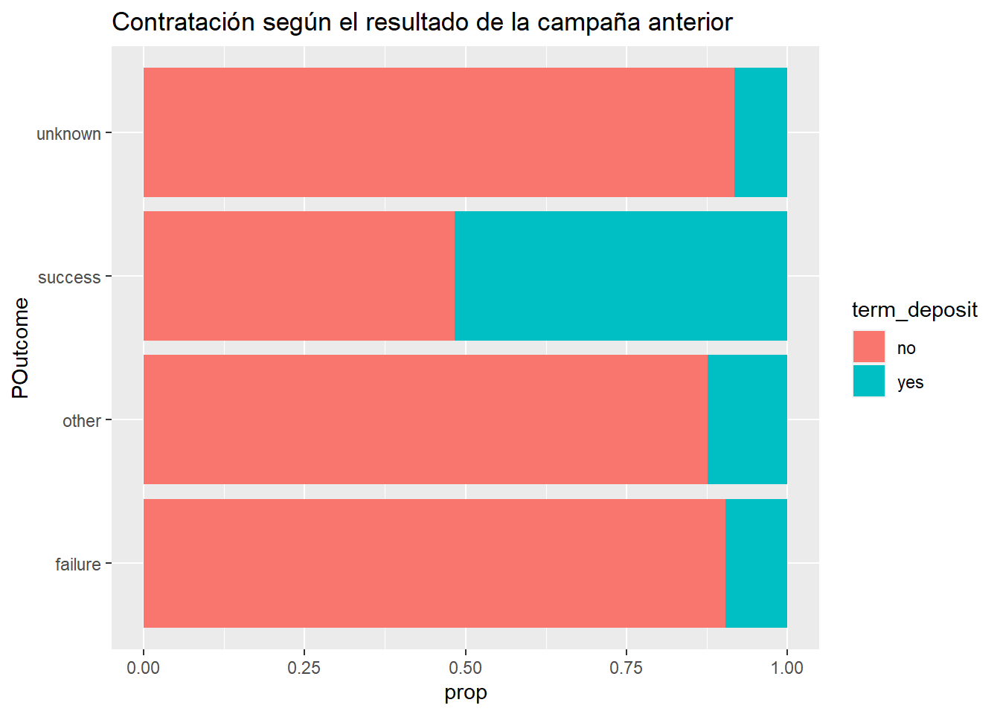

2 ANÁLISIS EXPLORATORIO VARIABLES
En el EDA de este proyecto se ha procedido a analizar cada variable individualmente. Se ha observado cada una de las variables por si sola, que representan, su distribución, estadísticos básicos, missing values y capacidad predictora en un enfoque univariante para un modelo de regresión logística. Todo ello para entender cada una de las variables y el como procesarlas de la mejor forma posible de cara a utilizarlas en un modelo de aprendizaje automático. Por ello, también se ha adelantado en esta fase algunas posibles transformaciones que puedan ser de utilidad en la ETL.
2.1 Importación dataset
Fijamos semilla para asegurar la replicación de los resultados de este proyecto.
##
## -- Column specification --------------------------------------------------------
## cols(
## age = col_double(),
## job = col_character(),
## marital = col_character(),
## education = col_character(),
## default = col_character(),
## balance = col_double(),
## housing = col_character(),
## loan = col_character(),
## contact = col_character(),
## day = col_double(),
## month = col_character(),
## duration = col_double(),
## campaign = col_double(),
## pdays = col_double(),
## previous = col_double(),
## poutcome = col_character(),
## term_deposit = col_character()
## )## [1] 426392.2 División en train y test
Dividimos el dataset original en el conjunto de train y test. Test se ha apartado hasta evaluación, tomando las decisiones de la ETL solo con train para evitar cualquier tipo de sobreajuste indirecto sobre este subconjunto.
n = nrow(data)
trainIndex = sample(1:n, size = round(0.8*n), replace=FALSE)
train = data[trainIndex ,]
test = data[-trainIndex ,]## [1] 34111## [1] 8528## no yes
##
## 30938 3173## no yes
##
## 7740 7882.3 Estructura y resumen de train
Observamos su estructura y un resumen de las principales variables
## age job marital education
## Min. :18.00 Length:34111 Length:34111 Length:34111
## 1st Qu.:33.00 Class :character Class :character Class :character
## Median :39.00 Mode :character Mode :character Mode :character
## Mean :40.79
## 3rd Qu.:48.00
## Max. :95.00
## default balance housing loan
## Length:34111 Min. : -8019.0 Length:34111 Length:34111
## Class :character 1st Qu.: 63.5 Class :character Class :character
## Mode :character Median : 432.0 Mode :character Mode :character
## Mean : 1345.1
## 3rd Qu.: 1392.5
## Max. :102127.0
## contact day month duration
## Length:34111 Min. : 1.00 Length:34111 Min. : 0.0
## Class :character 1st Qu.: 8.00 Class :character 1st Qu.: 100.0
## Mode :character Median :16.00 Mode :character Median : 176.0
## Mean :15.84 Mean : 255.6
## 3rd Qu.:21.00 3rd Qu.: 315.0
## Max. :31.00 Max. :4918.0
## campaign pdays previous poutcome
## Min. : 1.00 Min. : -1.0 Min. : 0.0000 Length:34111
## 1st Qu.: 1.00 1st Qu.: -1.0 1st Qu.: 0.0000 Class :character
## Median : 2.00 Median : -1.0 Median : 0.0000 Mode :character
## Mean : 2.81 Mean : 34.1 Mean : 0.4633
## 3rd Qu.: 3.00 3rd Qu.: -1.0 3rd Qu.: 0.0000
## Max. :63.00 Max. :536.0 Max. :275.0000
## term_deposit
## Length:34111
## Class :character
## Mode :character
##
##
## ## train
##
## 17 Variables 34111 Observations
## --------------------------------------------------------------------------------
## age
## n missing distinct Info Mean Gmd .05 .10
## 34111 0 74 0.999 40.79 11.47 27 29
## .25 .50 .75 .90 .95
## 33 39 48 56 58
##
## lowest : 18 19 20 21 22, highest: 87 89 90 92 95
## --------------------------------------------------------------------------------
## job
## n missing distinct
## 34111 0 12
##
## lowest : admin. blue-collar entrepreneur housemaid management
## highest: services student technician unemployed unknown
##
## admin. (3892, 0.114), blue-collar (7608, 0.223), entrepreneur (1137, 0.033),
## housemaid (937, 0.027), management (7130, 0.209), retired (1503, 0.044),
## self-employed (1183, 0.035), services (3215, 0.094), student (581, 0.017),
## technician (5763, 0.169), unemployed (955, 0.028), unknown (207, 0.006)
## --------------------------------------------------------------------------------
## marital
## n missing distinct
## 34111 0 3
##
## Value divorced married single
## Frequency 3982 20680 9449
## Proportion 0.117 0.606 0.277
## --------------------------------------------------------------------------------
## education
## n missing distinct
## 34111 0 4
##
## Value primary secondary tertiary unknown
## Frequency 5272 17645 9847 1347
## Proportion 0.155 0.517 0.289 0.039
## --------------------------------------------------------------------------------
## default
## n missing distinct
## 34111 0 2
##
## Value no yes
## Frequency 33463 648
## Proportion 0.981 0.019
## --------------------------------------------------------------------------------
## balance
## n missing distinct Info Mean Gmd .05 .10
## 34111 0 6531 0.999 1345 2045 -191.0 0.0
## .25 .50 .75 .90 .95
## 63.5 432.0 1392.5 3570.0 5771.0
##
## lowest : -8019 -6847 -4057 -3372 -3313, highest: 64343 66721 71188 81204 102127
## --------------------------------------------------------------------------------
## housing
## n missing distinct
## 34111 0 2
##
## Value no yes
## Frequency 14509 19602
## Proportion 0.425 0.575
## --------------------------------------------------------------------------------
## loan
## n missing distinct
## 34111 0 2
##
## Value no yes
## Frequency 28463 5648
## Proportion 0.834 0.166
## --------------------------------------------------------------------------------
## contact
## n missing distinct
## 34111 0 3
##
## Value cellular telephone unknown
## Frequency 21769 2097 10245
## Proportion 0.638 0.061 0.300
## --------------------------------------------------------------------------------
## day
## n missing distinct Info Mean Gmd .05 .10
## 34111 0 31 0.998 15.84 9.544 3 5
## .25 .50 .75 .90 .95
## 8 16 21 28 30
##
## lowest : 1 2 3 4 5, highest: 27 28 29 30 31
## --------------------------------------------------------------------------------
## month
## n missing distinct
## 34111 0 12
##
## lowest : apr aug dec feb jan, highest: mar may nov oct sep
##
## Value apr aug dec feb jan jul jun mar may nov oct
## Frequency 2142 4813 171 1823 969 5244 4125 214 10852 3113 419
## Proportion 0.063 0.141 0.005 0.053 0.028 0.154 0.121 0.006 0.318 0.091 0.012
##
## Value sep
## Frequency 226
## Proportion 0.007
## --------------------------------------------------------------------------------
## duration
## n missing distinct Info Mean Gmd .05 .10
## 34111 0 1485 1 255.6 235 35 58
## .25 .50 .75 .90 .95
## 100 176 315 544 749
##
## lowest : 0 2 3 4 5, highest: 3284 3322 3366 3881 4918
## --------------------------------------------------------------------------------
## campaign
## n missing distinct Info Mean Gmd .05 .10
## 34111 0 45 0.921 2.81 2.435 1 1
## .25 .50 .75 .90 .95
## 1 2 3 5 8
##
## lowest : 1 2 3 4 5, highest: 43 44 55 58 63
## --------------------------------------------------------------------------------
## pdays
## n missing distinct Info Mean Gmd .05 .10
## 34111 0 409 0.393 34.1 62.25 -1 -1
## .25 .50 .75 .90 .95
## -1 -1 -1 175 301
##
## lowest : -1 1 2 4 5, highest: 495 515 518 520 536
## --------------------------------------------------------------------------------
## previous
## n missing distinct Info Mean Gmd .05 .10
## 34111 0 36 0.393 0.4633 0.8488 0 0
## .25 .50 .75 .90 .95
## 0 0 0 1 3
##
## lowest : 0 1 2 3 4, highest: 37 38 51 58 275
## --------------------------------------------------------------------------------
## poutcome
## n missing distinct
## 34111 0 4
##
## Value failure other success unknown
## Frequency 3401 1201 625 28884
## Proportion 0.100 0.035 0.018 0.847
## --------------------------------------------------------------------------------
## term_deposit
## n missing distinct
## 34111 0 2
##
## Value no yes
## Frequency 30938 3173
## Proportion 0.907 0.093
## --------------------------------------------------------------------------------2.4 Exploratorio univariante de las variables predictoras
2.4.1 Variable age
La variable age es una variable cuantitativa situada en la escala de proporción. Dicha variable indica la edad del cliente.
## train$age
## n missing distinct Info Mean Gmd .05 .10
## 34111 0 74 0.999 40.79 11.47 27 29
## .25 .50 .75 .90 .95
## 33 39 48 56 58
##
## lowest : 18 19 20 21 22, highest: 87 89 90 92 95Debes ser mayor de edad para contratar el depósito. La media de edad de nuestros individuos se encuentra en torno a los 41 años.
ggplot(train, aes(x = age)) +
geom_histogram(aes(y = ..density..), fill="skyblue2", colour="white") +
ggtitle('Edad del cliente')## `stat_bin()` using `bins = 30`. Pick better value with `binwidth`.ggplot(train,aes(x=age, fill = term_deposit)) + geom_histogram(aes(y = ..density..)) + geom_density(alpha = 0) + facet_wrap(~term_deposit) + ggtitle("Edad del cliente")## `stat_bin()` using `bins = 30`. Pick better value with `binwidth`.ggplot(train ,aes(x=age, fill=term_deposit)) + geom_density(alpha = .5) + ggtitle("Edad del cliente")Podemos observar como son los jóvenes y los mayores los que mayor probabilidad de contratar el depósito tienen.
Se realiza un logit con la variable edad en forma continua para ver sus resultados.
logit_edad = glm(as.factor(term_deposit) ~ age, family=(binomial(link=logit)), data = train)
summary(logit_edad)##
## Call:
## glm(formula = as.factor(term_deposit) ~ age, family = (binomial(link = logit)),
## data = train)
##
## Deviance Residuals:
## Min 1Q Median 3Q Max
## -0.4859 -0.4466 -0.4396 -0.4342 2.2147
##
## Coefficients:
## Estimate Std. Error z value Pr(>|z|)
## (Intercept) -2.429109 0.076792 -31.632 <2e-16 ***
## age 0.003707 0.001812 2.046 0.0408 *
## ---
## Signif. codes: 0 '***' 0.001 '**' 0.01 '*' 0.05 '.' 0.1 ' ' 1
##
## (Dispersion parameter for binomial family taken to be 1)
##
## Null deviance: 21113 on 34110 degrees of freedom
## Residual deviance: 21108 on 34109 degrees of freedom
## AIC: 21112
##
## Number of Fisher Scoring iterations: 5Se comprueba como la variable edad en forma continua no es tan significativa ya que el peso de los ancianos se contrarresta con el peso de los jóvenes. Por ello aumentar la variable edad en una unidad no tiene un efecto tan significativo en nuestra variable objetivo.
Se puede apreciar gráficamente como los más jóvenes y los más mayores tienen mayor probabilidad de contratar el depósito. Queremos ver si estas particularidades tienen efecto que con en una variable continua se podrían obviar.
Para ello convertimos nuestra variable continua en una variable categórica.
train = train %>% mutate(age_categorica = cut(age, breaks = c(0, 29, 44, 59, 100), right = TRUE, labels = c('Joven','MedianaEdad','Mayores','Ancianos')))## Joven MedianaEdad Mayores Ancianos
##
## 3792 18612 10695 1012## train$age_categorica
## n missing distinct
## 34111 0 4
##
## Value Joven MedianaEdad Mayores Ancianos
## Frequency 3792 18612 10695 1012
## Proportion 0.111 0.546 0.314 0.030train$age_categorica = factor(train$age_categorica, levels=(c('MedianaEdad', 'Joven','Mayores','Ancianos')))## [1] "MedianaEdad" "Joven" "Mayores" "Ancianos"##
## Cell Contents
## |-------------------------|
## | Count |
## | Chi-square contribution |
## | Row Percent |
## | Column Percent |
## | Total Percent |
## |-------------------------|
##
## Total Observations in Table: 34111
##
## | term_deposit
## age_categorica | no | yes | Row Total |
## ---------------|-----------|-----------|-----------|
## MedianaEdad | 17035 | 1577 | 18612 |
## | 1.410 | 13.749 | |
## | 91.527% | 8.473% | 54.563% |
## | 55.062% | 49.701% | |
## | 49.940% | 4.623% | |
## ---------------|-----------|-----------|-----------|
## Joven | 3286 | 506 | 3792 |
## | 6.830 | 66.598 | |
## | 86.656% | 13.344% | 11.117% |
## | 10.621% | 15.947% | |
## | 9.633% | 1.483% | |
## ---------------|-----------|-----------|-----------|
## Mayores | 9869 | 826 | 10695 |
## | 2.939 | 28.657 | |
## | 92.277% | 7.723% | 31.354% |
## | 31.899% | 26.032% | |
## | 28.932% | 2.422% | |
## ---------------|-----------|-----------|-----------|
## Ancianos | 748 | 264 | 1012 |
## | 31.436 | 306.511 | |
## | 73.913% | 26.087% | 2.967% |
## | 2.418% | 8.320% | |
## | 2.193% | 0.774% | |
## ---------------|-----------|-----------|-----------|
## Column Total | 30938 | 3173 | 34111 |
## | 90.698% | 9.302% | |
## ---------------|-----------|-----------|-----------|
##
## ggplot(train, aes(x = age_categorica, fill = term_deposit)) + geom_bar(position= position_fill(reverse = TRUE)) + coord_flip() + labs(x = 'Edad del cliente', y = 'prop') + ggtitle("Edad del cliente")Se puede comprobar como las personas de mayor edad y los más jóvenes son los más propensos a contratar el depósito que las personas de mediana edad y que las personas mayores.
Realizamos un logit con esta variable categórica donde la categoría de referencia se encuentra en mediana edad. Aquellas personas entre 30 y 44 años.
logit_edadcat = glm(as.factor(term_deposit) ~ age_categorica, family=(binomial(link=logit)), data = train)
summary(logit_edadcat)##
## Call:
## glm(formula = as.factor(term_deposit) ~ age_categorica, family = (binomial(link = logit)),
## data = train)
##
## Deviance Residuals:
## Min 1Q Median 3Q Max
## -0.7775 -0.4208 -0.4208 -0.4009 2.2632
##
## Coefficients:
## Estimate Std. Error z value Pr(>|z|)
## (Intercept) -2.37975 0.02632 -90.411 <2e-16 ***
## age_categoricaJoven 0.50886 0.05453 9.332 <2e-16 ***
## age_categoricaMayores -0.10081 0.04477 -2.252 0.0244 *
## age_categoricaAncianos 1.33829 0.07627 17.546 <2e-16 ***
## ---
## Signif. codes: 0 '***' 0.001 '**' 0.01 '*' 0.05 '.' 0.1 ' ' 1
##
## (Dispersion parameter for binomial family taken to be 1)
##
## Null deviance: 21113 on 34110 degrees of freedom
## Residual deviance: 20760 on 34107 degrees of freedom
## AIC: 20768
##
## Number of Fisher Scoring iterations: 5Posteriormente en la selección de variables se realizará una modificación en las categorías de esta variable.
2.4.2 Variable balance
La variable balance es una variable cuantitativa situada en la escala de intervalo. Dicha variable indica el saldo del cliente.
## train$balance
## n missing distinct Info Mean Gmd .05 .10
## 34111 0 6531 0.999 1345 2045 -191.0 0.0
## .25 .50 .75 .90 .95
## 63.5 432.0 1392.5 3570.0 5771.0
##
## lowest : -8019 -6847 -4057 -3372 -3313, highest: 64343 66721 71188 81204 102127Variable tiene saldo negativo lo que podría limitar su transformación aunque existe otra variable en el modelo donde se indica si el cliente está o no en mora.
La distribución de la variable cuenta con una larga cola que hace complicado estudiar la distribución más allá de los valores iniciales.
ggplot(train, aes(x = balance)) +
geom_histogram(fill="skyblue2", colour="white") + ggtitle('Saldo del cliente')## `stat_bin()` using `bins = 30`. Pick better value with `binwidth`.ggplot(train, aes(x=balance, fill = term_deposit)) + geom_histogram(aes(y = ..density..)) + geom_density(alpha = .5) + facet_wrap(~term_deposit) + ggtitle("Saldo del cliente")## `stat_bin()` using `bins = 30`. Pick better value with `binwidth`.ggplot(train ,aes(x=balance, fill=term_deposit)) + geom_density(alpha = .3) + ggtitle("Saldo del cliente")Se comprueba como no se puede apreciar correctamente las funciones de densidad condicionadas a contratar o no el depósito. Por ello, debemos pensar en transformar nuestra variable.
Primero comprobamos como tener saldo negativo es distinto de estar en mora al menos con los datos que tenemos. Por ello, tendríamos que ir con más cuidado a la hora de realizar una transformación logaritmica de nuestra variable.
## balance_neg$balance
## n missing distinct Info Mean Gmd .05 .10
## 2964 0 844 1 -320 324 -938.0 -691.7
## .25 .50 .75 .90 .95
## -416.2 -232.0 -95.0 -28.0 -11.0
##
## lowest : -8019 -6847 -4057 -3372 -3313, highest: -5 -4 -3 -2 -1## balance_neg$default
## n missing distinct
## 2964 0 2
##
## Value no yes
## Frequency 2610 354
## Proportion 0.881 0.119Las personas que tienen saldo negativo en nuestro data set son 2964 clientes. Aunque los clientes que tienen un crédito en mora tan solo son 354. Representa tan solo el 12% del total con saldo negativo.
## balance_cero$balance
## n missing distinct Info Mean Gmd
## 2716 0 1 0 0 0
##
## Value 0
## Frequency 2716
## Proportion 1## balance_cero$default
## n missing distinct
## 2716 0 2
##
## Value no yes
## Frequency 2622 94
## Proportion 0.965 0.035Se comprueba como aquellos que tienen saldo 0 son 2716 clientes sumándoles aquellos con saldo negativo suponen 5680 observaciones mientras que las personas con mora pertenecientes a esos grupo únicamente suman 448 observaciones.
Por tanto, la variable default no podría explicar aquellas observaciones perdidas al realizar el logaritmo.
## balance_pos$balance
## n missing distinct Info Mean Gmd .05 .10
## 28431 0 5686 1 1647 2210 24 63
## .25 .50 .75 .90 .95
## 221 635 1734 4089 6429
##
## lowest : 1 2 3 4 5, highest: 64343 66721 71188 81204 102127## Warning: Problem with `mutate()` input `log_balance`.
## i Se han producido NaNs
## i Input `log_balance` is `log10(balance)`.## Warning in mask$eval_all_mutate(dots[[i]]): Se han producido NaNs## Warning in w * sort(x - mean(x)): longitud de objeto mayor no es múltiplo de la
## longitud de uno menor## train$log_balance
## n missing distinct Info Mean Gmd .05 .10
## 31147 2964 5687 0.999 -Inf NaN -Inf 0.6021
## .25 .50 .75 .90 .95
## 2.1430 2.7243 3.1926 3.5812 3.7852
##
## lowest : -Inf 0.0000000 0.3010300 0.4771213 0.6020600
## highest: 4.8085013 4.8242625 4.8524068 4.9095774 5.0091406Se transforma la variable mediante el logaritmo para suavizar el crecimiento al principio y acrecentarlo al final.
Al realizar esta transformación se producen valores NaNs. En la variable balance existen 5680 valores en los cuales el cliente no tiene saldo o su saldo es negativo.
ggplot(train, aes(x = log_balance)) +
geom_histogram(fill="skyblue2", colour="white") + ggtitle('Log saldo del cliente')## `stat_bin()` using `bins = 30`. Pick better value with `binwidth`.## Warning: Removed 5680 rows containing non-finite values (stat_bin).ggplot(train, aes(x=log_balance, fill = term_deposit)) + geom_histogram(aes(y = ..density..)) + geom_density(alpha = .5) + facet_wrap(~term_deposit) + ggtitle("Log saldo del cliente")## `stat_bin()` using `bins = 30`. Pick better value with `binwidth`.## Warning: Removed 5680 rows containing non-finite values (stat_bin).## Warning: Removed 5680 rows containing non-finite values (stat_density).ggplot(train ,aes(log_balance, fill=term_deposit)) + geom_density(alpha = .5) + ggtitle("Log saldo del cliente")## Warning: Removed 5680 rows containing non-finite values (stat_density).Con esta visualización únicamente podemos intuir que aquellas personas con mayor saldo en cuenta tienen mayor probabilidad de contratar un depósito.
Por ello, otra opción que se podría realizar en vez de realizar el logaritmo y perder información se podría categorizar la variable respecto al saldo en cuenta.
## bal$balance
## n missing distinct Info Mean Gmd .05 .10
## 28431 0 5686 1 1647 2210 24 63
## .25 .50 .75 .90 .95
## 221 635 1734 4089 6429
##
## lowest : 1 2 3 4 5, highest: 64343 66721 71188 81204 102127## [1] 3225.537## [1] 1513.5Se dividiría la variable en cuatro categorías.
Saldos negativos. Siendo la cantidad inferior a 0.
Saldos bajos. De acuerdo a nuestros datos, la media de saldos positivos se encuentra en torno a 1500 euros. Aunque está sesgada debido a la gran cantidad de saldos altos y a una gran dispersión en nuestros datos. Por ello, se aumenta el límite de esta franja hasta los 2000€. La mediana de los datos se encuentra en torno a 635 y el IQR en torno a 1500.
Saldos medios. Se encuentra cercanos desde la media hasta los 10000 euros.
Saldos altos. A partir de dicha cantidad teniendo en cuenta la distribución de nuestros datos.
train = train %>% mutate(balance_categorica = cut(balance, breaks = c(-10000, 0, 2000, 10000, 105000), right = FALSE, labels = c('Negativo','Bajo','Medio', 'Alto')))## Negativo Bajo Medio Alto
##
## 2964 24873 5649 625## train$balance_categorica
## n missing distinct
## 34111 0 4
##
## Value Negativo Bajo Medio Alto
## Frequency 2964 24873 5649 625
## Proportion 0.087 0.729 0.166 0.018##
## Cell Contents
## |-------------------------|
## | Count |
## | Chi-square contribution |
## | Row Percent |
## | Column Percent |
## | Total Percent |
## |-------------------------|
##
## Total Observations in Table: 34111
##
## | term_deposit
## balance_categorica | no | yes | Row Total |
## -------------------|-----------|-----------|-----------|
## Negativo | 2803 | 161 | 2964 |
## | 4.895 | 47.726 | |
## | 94.568% | 5.432% | 8.689% |
## | 9.060% | 5.074% | |
## | 8.217% | 0.472% | |
## -------------------|-----------|-----------|-----------|
## Bajo | 22684 | 2189 | 24873 |
## | 0.689 | 6.719 | |
## | 91.199% | 8.801% | 72.918% |
## | 73.321% | 68.988% | |
## | 66.501% | 6.417% | |
## -------------------|-----------|-----------|-----------|
## Medio | 4911 | 738 | 5649 |
## | 8.816 | 85.960 | |
## | 86.936% | 13.064% | 16.561% |
## | 15.874% | 23.259% | |
## | 14.397% | 2.164% | |
## -------------------|-----------|-----------|-----------|
## Alto | 540 | 85 | 625 |
## | 1.273 | 12.412 | |
## | 86.400% | 13.600% | 1.832% |
## | 1.745% | 2.679% | |
## | 1.583% | 0.249% | |
## -------------------|-----------|-----------|-----------|
## Column Total | 30938 | 3173 | 34111 |
## | 90.698% | 9.302% | |
## -------------------|-----------|-----------|-----------|
##
## Al establecer las categorías en base a nuestros datos de entrenamiento se podría caer también en overfitting.
ggplot(train, aes(x = balance_categorica, fill = term_deposit)) + geom_bar(position= position_fill(reverse = TRUE)) + coord_flip() + labs(x = 'Saldo en cuenta cliente', y = 'prop') + ggtitle("Saldos del cliente")Se aprecia como a medida que crecen los saldos, la probabilidad de contratar un depósito aumenta.
2.4.3 Variable job
Variable categórica en escala nominal que muestra el tipo de puesto laboral (management, technician, entrepeneur, administrative, blue-collar, services, retired, unknown)
## [1] "admin." "blue-collar" "entrepreneur" "housemaid"
## [5] "management" "retired" "self-employed" "services"
## [9] "student" "technician" "unemployed" "unknown"Mostramos la tabla de frecuencias absolutas y relativas:
## admin. blue-collar entrepreneur housemaid management retired self-employed services student technician unemployed unknown
##
## 3892 7608 1137 937 7130 1503 1183 3215 581 5763 955 207## admin. blue-collar entrepreneur housemaid management retired self-employed services student technician unemployed unknown
##
## 0.114098092 0.223036557 0.033332356 0.027469145 0.209023482 0.044062033 0.034680895 0.094251121 0.017032629 0.168948433 0.027996834 0.006068424La categoría más frecuente es la de unemployed, seguido de blue-collar y management.
ggplot(train, aes(job)) + geom_bar(aes(y = ..prop.., group = 1),position='dodge', fill = 'skyblue2') + coord_flip() + ggtitle("Profesión del cliente")La cruzamos con la variable objetivo:
##
## Cell Contents
## |-------------------------|
## | Count |
## | Chi-square contribution |
## | Row Percent |
## | Column Percent |
## | Total Percent |
## |-------------------------|
##
## Total Observations in Table: 34111
##
## | term_deposit
## job | no | yes | Row Total |
## --------------|-----------|-----------|-----------|
## admin. | 3509 | 383 | 3892 |
## | 0.125 | 1.214 | |
## | 90.159% | 9.841% | 11.410% |
## | 11.342% | 12.071% | |
## | 10.287% | 1.123% | |
## --------------|-----------|-----------|-----------|
## blue-collar | 7103 | 505 | 7608 |
## | 5.954 | 58.055 | |
## | 93.362% | 6.638% | 22.304% |
## | 22.959% | 15.916% | |
## | 20.823% | 1.480% | |
## --------------|-----------|-----------|-----------|
## entrepreneur | 1061 | 76 | 1137 |
## | 0.859 | 8.376 | |
## | 93.316% | 6.684% | 3.333% |
## | 3.429% | 2.395% | |
## | 3.110% | 0.223% | |
## --------------|-----------|-----------|-----------|
## housemaid | 873 | 64 | 937 |
## | 0.631 | 6.154 | |
## | 93.170% | 6.830% | 2.747% |
## | 2.822% | 2.017% | |
## | 2.559% | 0.188% | |
## --------------|-----------|-----------|-----------|
## management | 6345 | 785 | 7130 |
## | 2.293 | 22.357 | |
## | 88.990% | 11.010% | 20.902% |
## | 20.509% | 24.740% | |
## | 18.601% | 2.301% | |
## --------------|-----------|-----------|-----------|
## retired | 1250 | 253 | 1503 |
## | 9.399 | 91.641 | |
## | 83.167% | 16.833% | 4.406% |
## | 4.040% | 7.974% | |
## | 3.665% | 0.742% | |
## --------------|-----------|-----------|-----------|
## self-employed | 1073 | 110 | 1183 |
## | 0.000 | 0.000 | |
## | 90.702% | 9.298% | 3.468% |
## | 3.468% | 3.467% | |
## | 3.146% | 0.322% | |
## --------------|-----------|-----------|-----------|
## services | 2980 | 235 | 3215 |
## | 1.407 | 13.721 | |
## | 92.691% | 7.309% | 9.425% |
## | 9.632% | 7.406% | |
## | 8.736% | 0.689% | |
## --------------|-----------|-----------|-----------|
## student | 462 | 119 | 581 |
## | 8.007 | 78.069 | |
## | 79.518% | 20.482% | 1.703% |
## | 1.493% | 3.750% | |
## | 1.354% | 0.349% | |
## --------------|-----------|-----------|-----------|
## technician | 5244 | 519 | 5763 |
## | 0.056 | 0.544 | |
## | 90.994% | 9.006% | 16.895% |
## | 16.950% | 16.357% | |
## | 15.373% | 1.522% | |
## --------------|-----------|-----------|-----------|
## unemployed | 848 | 107 | 955 |
## | 0.381 | 3.715 | |
## | 88.796% | 11.204% | 2.800% |
## | 2.741% | 3.372% | |
## | 2.486% | 0.314% | |
## --------------|-----------|-----------|-----------|
## unknown | 190 | 17 | 207 |
## | 0.027 | 0.264 | |
## | 91.787% | 8.213% | 0.607% |
## | 0.614% | 0.536% | |
## | 0.557% | 0.050% | |
## --------------|-----------|-----------|-----------|
## Column Total | 30938 | 3173 | 34111 |
## | 90.698% | 9.302% | |
## --------------|-----------|-----------|-----------|
##
## Con la tabla de frecuencias se observa que el porcentaje de contratación del depósito varía según nivel de empleo.
ggplot(train, aes(x = job, fill = term_deposit)) + geom_bar(position = 'dodge') + coord_flip() + facet_wrap(~term_deposit, nrow = 1) + ggtitle("Contratación de depósito según profesión del cliente")ggplot(train, aes(x = job, fill = term_deposit)) + geom_bar(aes(y = ..prop.., group = 1 ),position = 'dodge') + coord_flip() + facet_wrap(~term_deposit, nrow = 1) + ggtitle("Contratación de depósito según profesión del cliente")ggplot(train, aes(x = job, fill = term_deposit)) + geom_bar(position= position_fill(reverse = TRUE)) + coord_flip() + labs(x = 'tipo de puesto laboral', y = 'prop') + ggtitle("Contratación de depósito según profesión del cliente")Estudiante es el estado profesional más propenso a contratar el producto, seguido de jubilado. Pero todas las profesiones parecen ser buenos discriminadores de la probabilidad de contratación. Por lo que esta variable parece que pueda ser una buena variable predictora.
Hallamos la regresión logística múltiple en función de la variable job mediante las categorías dumificadas. Calculamos los parámetros de la regresión logística múltiple
## Warning in `[<-.factor`(`*tmp*`, train$job == "blue-collar", value =
## structure(c(1L, : invalid factor level, NA generated## Warning in `[<-.factor`(`*tmp*`, train$job == "self-employed", value =
## structure(c(1L, : invalid factor level, NA generatedtrain <- dummy_cols (train, select_columns = c("job"))
modelo.log.m.job <- glm(as.factor(term_deposit) ~ job, family = binomial, data = train )
summary(modelo.log.m.job)##
## Call:
## glm(formula = as.factor(term_deposit) ~ job, family = binomial,
## data = train)
##
## Deviance Residuals:
## Min 1Q Median 3Q Max
## -0.6770 -0.4830 -0.4345 -0.3896 2.3261
##
## Coefficients:
## Estimate Std. Error z value Pr(>|z|)
## (Intercept) -2.21505 0.05381 -41.161 < 2e-16 ***
## jobentrepreneur -0.42118 0.13037 -3.231 0.001235 **
## jobhousemaid -0.39800 0.14024 -2.838 0.004539 **
## jobmanagement 0.12531 0.06578 1.905 0.056789 .
## jobretired 0.61754 0.08746 7.061 1.65e-12 ***
## jobservices -0.32504 0.08653 -3.757 0.000172 ***
## jobstudent 0.85861 0.11603 7.400 1.37e-13 ***
## jobtechnician -0.09788 0.07081 -1.382 0.166836
## jobunemployed 0.14500 0.11585 1.252 0.210706
## jobunknown -0.19876 0.25881 -0.768 0.442503
## ---
## Signif. codes: 0 '***' 0.001 '**' 0.01 '*' 0.05 '.' 0.1 ' ' 1
##
## (Dispersion parameter for binomial family taken to be 1)
##
## Null deviance: 16576 on 25319 degrees of freedom
## Residual deviance: 16382 on 25310 degrees of freedom
## (8791 observations deleted due to missingness)
## AIC: 16402
##
## Number of Fisher Scoring iterations: 5Obtenemos los intervaleos de confianza de los coeficientes parciales de correlación del modelo. Los intervalos que contengan el 0 indican que la variable dummy a la que están asociados no es significativa en el modelo.
## Waiting for profiling to be done...## 2.5 % 97.5 %
## (Intercept) -2.322046533 -2.11104003
## jobentrepreneur -0.683303370 -0.17156853
## jobhousemaid -0.681013991 -0.13040880
## jobmanagement -0.002893356 0.25504234
## jobretired 0.445369745 0.78832996
## jobservices -0.495677094 -0.15633666
## jobstudent 0.628183294 1.08338812
## jobtechnician -0.236311421 0.04132549
## jobunemployed -0.086062909 0.36848112
## jobunknown -0.742160419 0.27867447Los predictores estadísticamente significativos de la regresión son el intercept y las variables job_student y job_retired con pvalores menores que el nivel de significación impuesto (alfa = 0.05).
Los coeficientes positivos indican que aumenta la probabilidad de contrato del depósito para la categoría asociada y los negativos la decrementan. Los estudiantes tienen asociado un coeficiente positivo (1.027) y los retirados 0.702. A mayor valor del coeficiente, mayor probabilidad de contratación.
2.4.4 Variable marital
Variable categórica en escala nominal, muestra el estado civil (married, single, divorced).
## [1] "divorced" "married" "single"reorder_marital = factor(train$marital, levels = (c('single','married','divorce')))
levels(reorder_marital)## [1] "single" "married" "divorce"Mostramos la tabla de frecuencias absolutas y relativas:
## divorced married single
##
## 3982 20680 9449## divorced married single
##
## 0.1167365 0.6062560 0.2770074ggplot(train, aes(marital)) + geom_bar(aes(y = ..prop.., group = 1 ), fill = 'skyblue2') + ggtitle("Estado civil del cliente")
El estado civil más numeroso es casado.
La cruzamos con la variable objetivo:
##
## Cell Contents
## |-------------------------|
## | Count |
## | Chi-square contribution |
## | Row Percent |
## | Column Percent |
## | Total Percent |
## |-------------------------|
##
## Total Observations in Table: 34111
##
## | term_deposit
## marital | no | yes | Row Total |
## -------------|-----------|-----------|-----------|
## divorced | 3575 | 407 | 3982 |
## | 0.371 | 3.615 | |
## | 89.779% | 10.221% | 11.674% |
## | 11.555% | 12.827% | |
## | 10.480% | 1.193% | |
## -------------|-----------|-----------|-----------|
## married | 19008 | 1672 | 20680 |
## | 3.376 | 32.921 | |
## | 91.915% | 8.085% | 60.626% |
## | 61.439% | 52.695% | |
## | 55.724% | 4.902% | |
## -------------|-----------|-----------|-----------|
## single | 8355 | 1094 | 9449 |
## | 5.397 | 52.619 | |
## | 88.422% | 11.578% | 27.701% |
## | 27.006% | 34.478% | |
## | 24.494% | 3.207% | |
## -------------|-----------|-----------|-----------|
## Column Total | 30938 | 3173 | 34111 |
## | 90.698% | 9.302% | |
## -------------|-----------|-----------|-----------|
##
## En la tabla de frecuencias se observa que el porcentaje de contratación varía según el estado civil del cliente. Por este motivo, parece interesante dumificar la variable y hallar la regresión logística para ver si la diferencia entre las categorías es significativa.
ggplot(train, aes(x = marital, fill = term_deposit)) + geom_bar() + facet_wrap(~term_deposit, nrow = 1) + ggtitle("Contratación de depósito según estado civil del cliente")ggplot(train, aes(x = marital, fill = term_deposit)) + geom_bar(aes(y = ..prop.., group = 1 )) + facet_wrap(~term_deposit, nrow = 1) + ggtitle("Frecuencia de contratación de depósito según estado civil del cliente")ggplot(train, aes(x = marital, fill = term_deposit)) + geom_bar(position= position_fill(reverse = TRUE)) + coord_flip() + labs(x = 'tipo de puesto laboral', y = 'prop') + ggtitle("Contratación por estado civil del cliente")Soltero es el estado civil más propenso a contratar el producto, seguido muy de cerca de los divorciados y bastante alejado se encuentra el grupo de casados. Sin duda esta variable es informativa para un futuro modelo.
Hallamos la regresión logística múltiple en función de la variable marital mediante sus categorías dumificadas. Calculamos los parámetros de la regresión logística múltiple.
train <- dummy_cols (train, select_columns = c("marital"))
modelo.log.m.marital <- glm(as.factor(term_deposit) ~ marital, family = binomial, data = train )
summary(modelo.log.m.marital)##
## Call:
## glm(formula = as.factor(term_deposit) ~ marital, family = binomial,
## data = train)
##
## Deviance Residuals:
## Min 1Q Median 3Q Max
## -0.4961 -0.4644 -0.4106 -0.4106 2.2428
##
## Coefficients:
## Estimate Std. Error z value Pr(>|z|)
## (Intercept) -2.17291 0.05231 -41.536 < 2e-16 ***
## maritalmarried -0.25793 0.05820 -4.432 9.35e-06 ***
## maritalsingle 0.13989 0.06140 2.278 0.0227 *
## ---
## Signif. codes: 0 '***' 0.001 '**' 0.01 '*' 0.05 '.' 0.1 ' ' 1
##
## (Dispersion parameter for binomial family taken to be 1)
##
## Null deviance: 21113 on 34110 degrees of freedom
## Residual deviance: 21017 on 34108 degrees of freedom
## AIC: 21023
##
## Number of Fisher Scoring iterations: 5Obtenemos los intervalos de confianza de los coeficientes parciales de correlación del modelo. Los intervalos que contengan el 0 indican que la variable dummy a la que están asociados no es significativa en el modelo.
## Waiting for profiling to be done...## 2.5 % 97.5 %
## (Intercept) -2.27686396 -2.0717436
## maritalmarried -0.37097222 -0.1427697
## maritalsingle 0.02038193 0.2611420Los predictores estadísticamente significativos de la regresión son el intercept y las variables marital_married y marital_single con pvalores menores que el nivel de significación impuesto (alfa = 0.05).
Los coeficientes positivos indican que aumenta la probabilidad de contrato del depósito para la categoría asociada y los negativos la decrementan.
Los casados tienen asociado un coeficiente negativo (-0.21937) y los retirados un coeficiente positivo (0.21013). A mayor valor del coeficiente, mayor probabilidad de contratación. La diferencia de la probabilidad de contratación entre los distintos niveles categóricos es significativa, aumentando esta para los solteros y disminuyendo para los casados.
2.4.5 Variable education
Variable categórica en escala nominal que informa del nivel educativo del cliente, muestra el nivel de educación (primary, secondary, tertiary, unknown).
## [1] "primary" "secondary" "tertiary" "unknown"Mostramos la tabla de frecuencias absolutas y relativas:
## primary secondary tertiary unknown
##
## 5272 17645 9847 1347## primary secondary tertiary unknown
##
## 0.15455425 0.51728182 0.28867521 0.03948873ggplot(train, aes(education)) + geom_bar(aes(y = ..prop.., group = 1 ), fill = 'skyblue2') + ggtitle("Nivel educativo del cliente")Secondary es el nivel educativo más común seguido de lejos por tertiary y primary. Existe un pequeño porcentaje de clientes que no ha contestado la pregunta.
La cruzamos con la variable objetivo:
##
## Cell Contents
## |-------------------------|
## | Count |
## | Chi-square contribution |
## | Row Percent |
## | Column Percent |
## | Total Percent |
## |-------------------------|
##
## Total Observations in Table: 34111
##
## | term_deposit
## education | no | yes | Row Total |
## -------------|-----------|-----------|-----------|
## primary | 4894 | 378 | 5272 |
## | 2.642 | 25.762 | |
## | 92.830% | 7.170% | 15.455% |
## | 15.819% | 11.913% | |
## | 14.347% | 1.108% | |
## -------------|-----------|-----------|-----------|
## secondary | 16166 | 1479 | 17645 |
## | 1.647 | 16.056 | |
## | 91.618% | 8.382% | 51.728% |
## | 52.253% | 46.612% | |
## | 47.392% | 4.336% | |
## -------------|-----------|-----------|-----------|
## tertiary | 8660 | 1187 | 9847 |
## | 8.225 | 80.199 | |
## | 87.946% | 12.054% | 28.868% |
## | 27.991% | 37.409% | |
## | 25.388% | 3.480% | |
## -------------|-----------|-----------|-----------|
## unknown | 1218 | 129 | 1347 |
## | 0.011 | 0.109 | |
## | 90.423% | 9.577% | 3.949% |
## | 3.937% | 4.066% | |
## | 3.571% | 0.378% | |
## -------------|-----------|-----------|-----------|
## Column Total | 30938 | 3173 | 34111 |
## | 90.698% | 9.302% | |
## -------------|-----------|-----------|-----------|
##
## ggplot(train, aes(x = education, fill = term_deposit)) + geom_bar() + facet_wrap(~term_deposit, nrow = 1) + ggtitle("Contratación de depósito según el nivel educativo del cliente")ggplot(train, aes(x = education, fill = term_deposit)) + geom_bar(aes(y = ..prop.., group = 1 )) + facet_wrap(~term_deposit, nrow = 1) + ggtitle("Frecuencia de nivel educativo del cliente por contratación")ggplot(train, aes(x = education, fill = term_deposit)) + geom_bar(position= position_fill(reverse = TRUE)) + coord_flip() + labs(x = 'Nivel de educación', y = 'prop') + ggtitle("Contratación por nivel de estudios.")Con el análisis gráfico se observa una ligera diferencia de contratación del depósito en función del nivel educativo. El grupo más propenso a contratar el producto es secondary. Pero no hay diferencias tan notables como en otras variables categóricas como job o marital.
El grupo que no ha respondido a esta variable se asemeja a secondary en cuanto a densidad de contrataciones se refiere. Este hecho es recomendable tenerlo en cuenta a la hora de tratar los valores perdidos.
Hallamos la regresión logística múltiple en función de la variable education mediante las categorías dumificadas. Calculamos los parámetros de la regresión logística múltiple en función de los niveles educativos, excluyendo la categoría unknown porque entendemos que en este grupo se acumulan datos de las tres categorías disminuyendo la explicabilidad del modelo si está en función de esta variable dummy.
train <- dummy_cols (train, select_columns = c("education"))
modelo.log.m.education <- glm(as.factor(term_deposit) ~ education_primary + education_secondary + education_tertiary, family = binomial, data = train )
summary(modelo.log.m.education)##
## Call:
## glm(formula = as.factor(term_deposit) ~ education_primary + education_secondary +
## education_tertiary, family = binomial, data = train)
##
## Deviance Residuals:
## Min 1Q Median 3Q Max
## -0.5069 -0.5069 -0.4184 -0.4184 2.2958
##
## Coefficients:
## Estimate Std. Error z value Pr(>|z|)
## (Intercept) -2.24515 0.09259 -24.248 < 2e-16 ***
## education_primary -0.31572 0.10688 -2.954 0.00314 **
## education_secondary -0.14639 0.09649 -1.517 0.12924
## education_tertiary 0.25787 0.09763 2.641 0.00826 **
## ---
## Signif. codes: 0 '***' 0.001 '**' 0.01 '*' 0.05 '.' 0.1 ' ' 1
##
## (Dispersion parameter for binomial family taken to be 1)
##
## Null deviance: 21113 on 34110 degrees of freedom
## Residual deviance: 20982 on 34107 degrees of freedom
## AIC: 20990
##
## Number of Fisher Scoring iterations: 5Obtenemos los intervaleos de confianza de los coeficientes parciales de correlación del modelo. Los intervalos que contengan el 0 indican que la variable dummy a la que están asociados no es significativa en el modelo
## Waiting for profiling to be done...## 2.5 % 97.5 %
## (Intercept) -2.4312250 -2.06797435
## education_primary -0.5224124 -0.10312598
## education_secondary -0.3316027 0.04694852
## education_tertiary 0.0703250 0.45331803Los predictores estadísticamente significativos de la regresión son el intercept y las variables education_primary y education_tertiary con pvalores menores que el nivel de significación impuesto (alfa = 0.05).
Los coeficientes positivos indican que aumenta la probabilidad de contrato del depósito para la categoría asociada y los negativos la decrementan.
A niveles altos de educación, mayor es la probabilidad de contratación. A niveles bajos de educación, la probabilidad de contratación es menor. A niveles intermedios de educación no podemos afirmar nada con el modelo logístico calculado.
2.4.6 Variable default
Variable categórica en escala binaria. Indica si un cliente tiene mora o no.
## [1] "no" "yes"## [1] "no" "yes"Mostramos la tabla de frecuencias absolutas y relativas:
## no yes
##
## 33463 648## no yes
##
## 0.9810032 0.0189968ggplot(train, aes(default)) + geom_bar(aes(y = ..prop.., group = 1 ), fill = 'skyblue2') + ggtitle("Default del cliente")Sin duda el grupo más numeroso con gran diferencia es el de aquellos sin deudas.
La cruzamos con la variable objetivo:
##
## Cell Contents
## |-------------------------|
## | Count |
## | Chi-square contribution |
## | Row Percent |
## | Column Percent |
## | Total Percent |
## |-------------------------|
##
## Total Observations in Table: 34111
##
## | term_deposit
## default | no | yes | Row Total |
## -------------|-----------|-----------|-----------|
## no | 30329 | 3134 | 33463 |
## | 0.015 | 0.145 | |
## | 90.634% | 9.366% | 98.100% |
## | 98.032% | 98.771% | |
## | 88.913% | 9.188% | |
## -------------|-----------|-----------|-----------|
## yes | 609 | 39 | 648 |
## | 0.770 | 7.510 | |
## | 93.981% | 6.019% | 1.900% |
## | 1.968% | 1.229% | |
## | 1.785% | 0.114% | |
## -------------|-----------|-----------|-----------|
## Column Total | 30938 | 3173 | 34111 |
## | 90.698% | 9.302% | |
## -------------|-----------|-----------|-----------|
##
## ggplot(train, aes(x = default, fill = term_deposit)) + geom_bar() + facet_wrap(~term_deposit, nrow = 1) + ggtitle("Contratación de depósito según si el cliente tiene mora")ggplot(train, aes(x = default, fill = term_deposit)) + geom_bar(aes(y = ..prop.., group = 1 )) + facet_wrap(~term_deposit, nrow = 1) + ggtitle("Frecuencia de contratación de depósito según si el cliente tiene mora")
ggplot(train, aes(x = default, fill = term_deposit)) + geom_bar(position= position_fill(reverse = TRUE)) + coord_flip() + labs(x = 'Default', y = 'prop') + ggtitle("Contratación por morosidad.")Como era de esperar, aquellos con deudas pendientes son menos propensos a contratar el producto, por lo que esta variable parece ser una buena canditrain a ser variable predictora.
Hallamos la regresión logística múltiple en función de la variable default mediante las categorías dumificadas. Calculamos los parámetros de la regresión logística múltiple, para observar las diferencias en probabilidad para cada variable categórica.
train <- dummy_cols (train, select_columns = c("default"))
modelo.log.m.default <- glm(as.factor(term_deposit) ~ default, family = binomial, data = train )
summary(modelo.log.m.default)##
## Call:
## glm(formula = as.factor(term_deposit) ~ default, family = binomial,
## data = train)
##
## Deviance Residuals:
## Min 1Q Median 3Q Max
## -0.4435 -0.4435 -0.4435 -0.4435 2.3708
##
## Coefficients:
## Estimate Std. Error z value Pr(>|z|)
## (Intercept) -2.26979 0.01876 -120.971 <2e-16 ***
## defaultyes -0.47846 0.16624 -2.878 0.004 **
## ---
## Signif. codes: 0 '***' 0.001 '**' 0.01 '*' 0.05 '.' 0.1 ' ' 1
##
## (Dispersion parameter for binomial family taken to be 1)
##
## Null deviance: 21113 on 34110 degrees of freedom
## Residual deviance: 21103 on 34109 degrees of freedom
## AIC: 21107
##
## Number of Fisher Scoring iterations: 5Obtenemos los intervalos de confianza de los coeficientes parciales de correlación del modelo. Los intervalos que contengan el 0 indican que la variable dummy a la que están asociados no es significativa en el modelo.
## Waiting for profiling to be done...## 2.5 % 97.5 %
## (Intercept) -2.3067539 -2.2332015
## defaultyes -0.8203801 -0.1669569Los predictores estadísticamente significativos de la regresión son el intercept y las variables dumis default con pvalores menores que el nivel de significación impuesto (alfa = 0.05).
Los coeficientes positivos indican que aumenta la probabilidad de contrato del depósito para la categoría asociada y los negativos la decrementan. Como el coeficiente asociado a la variable default_yes es negativo, si el cliente es moroso, tiene menos probabilidad de contratación del depósito.
2.4.7 Variable housing
La variable housing es una variable dicotomica que muestra si tiene un préstamo hipotecario.
## [1] "no" "yes"## [1] "no" "yes"Tabla de frecuencias absolutas y relativas:
##
## no yes
## 14509 19602##
## no yes
## 0.4253467 0.5746533De manera gráfica:
ggplot(train, aes(housing)) + geom_bar(aes(y = ..prop.., group = 1 ), fill = 'skyblue2') + ggtitle("Tenencia de préstamo hipotecario")Se encuentran balanceado los datos y con mayor proporción en tener un préstamo hipotecario
Si evaluamos la variable housing respecto a nuestra variable objetivo (term_deposit)
##
## Cell Contents
## |-------------------------|
## | Count |
## | Chi-square contribution |
## | Row Percent |
## | Column Percent |
## | Total Percent |
## |-------------------------|
##
## Total Observations in Table: 34111
##
## | term_deposit
## housing | no | yes | Row Total |
## -------------|-----------|-----------|-----------|
## no | 12694 | 1815 | 14509 |
## | 16.458 | 160.470 | |
## | 87.491% | 12.509% | 42.535% |
## | 41.030% | 57.201% | |
## | 37.214% | 5.321% | |
## -------------|-----------|-----------|-----------|
## yes | 18244 | 1358 | 19602 |
## | 12.182 | 118.776 | |
## | 93.072% | 6.928% | 57.465% |
## | 58.970% | 42.799% | |
## | 53.484% | 3.981% | |
## -------------|-----------|-----------|-----------|
## Column Total | 30938 | 3173 | 34111 |
## | 90.698% | 9.302% | |
## -------------|-----------|-----------|-----------|
##
## En la tabla de frecuencias se observa que los clientes que no tienen hipoteca tienen más probabilidad de contratar el depósito, frente a los que la tienen.
Gráficamente:
ggplot(train, aes(x = housing, fill = term_deposit)) + geom_bar() + facet_wrap(~term_deposit, nrow = 1) + ggtitle("Contratación depósito según tenencia de hipoteca")ggplot(train, aes(x = housing, fill = term_deposit)) + geom_bar(aes(y = ..prop.., group = 1 )) + facet_wrap(~term_deposit, nrow = 1) + ggtitle("Contratación depósito según tenencia de hipoteca")ggplot(train, aes(x = housing, fill = term_deposit)) + geom_bar(position= position_fill(reverse = TRUE)) + coord_flip() + labs(x = 'Housing', y = 'prop') + ggtitle("Contratación por tenencia de hipoteca")Se comprueba que en términos relativos aquellos que contratan el depósito tienen mayor proporción de individuos que no cuenta con préstamo hipotecario. Al contrario ocurre con los que no contratan el depósito siendo en mayor proporción aquellos que sí tiene una hipoteca.
Hallamos la regresión logística múltiple en función de la variable Housing mediante las categorías dumificadas. Calculamos los parámetros de la regresión logística múltiple para observar si es significativa la tenencia de una hipoteca para la contratación del depósito.
train <- dummy_cols (train, select_columns = c("housing"))
modelo.log.m.housing <- glm(as.factor(term_deposit) ~ housing, family = binomial, data = train )
summary(modelo.log.m.housing)##
## Call:
## glm(formula = as.factor(term_deposit) ~ housing, family = binomial,
## data = train)
##
## Deviance Residuals:
## Min 1Q Median 3Q Max
## -0.5170 -0.5170 -0.3789 -0.3789 2.3107
##
## Coefficients:
## Estimate Std. Error z value Pr(>|z|)
## (Intercept) -1.94504 0.02509 -77.51 <2e-16 ***
## housingyes -0.65278 0.03770 -17.32 <2e-16 ***
## ---
## Signif. codes: 0 '***' 0.001 '**' 0.01 '*' 0.05 '.' 0.1 ' ' 1
##
## (Dispersion parameter for binomial family taken to be 1)
##
## Null deviance: 21113 on 34110 degrees of freedom
## Residual deviance: 20809 on 34109 degrees of freedom
## AIC: 20813
##
## Number of Fisher Scoring iterations: 5Obtenemos los intervalos de confianza de los coeficientes parciales de correlación del modelo. Los intervalos que contengan el 0 indican que la variable dummy a la que están asociados no es significativa en el modelo.
## Waiting for profiling to be done...## 2.5 % 97.5 %
## (Intercept) -1.9945343 -1.8961592
## housingyes -0.7267761 -0.5790008Los predictores estadísticamente significativos de la regresión son el intercept y las variables dumis housing con pvalores menores que el nivel de significación impuesto (alfa = 0.05).
Los coeficientes positivos indican que aumenta la probabilidad de contrato del depósito para la categoría asociada y los negativos la decrementan. Como el coeficiente asociado a la variable housing_yes es negativo, si el cliente tiene hipoteca, tiene menos probabilidad de contratación.
2.4.8 Variable loan
La variable loan es una variable dicotómica que muestra si el cliente tiene un préstamo personal.
## [1] "no" "yes"Al ser una variable categórica realizamos una tabla de frecuencias absoluta y de frecuencias relativa para ver su composición de forma univariante.
##
## no yes
## 28463 5648##
## no yes
## 0.8344229 0.1655771De manera gráfica
ggplot(train, aes(loan)) + geom_bar(aes(y = ..prop.., group = 1 ), fill = 'skyblue2') + ggtitle("Tenencia de préstamo personal")La gran parte de los clientes no tienen un préstamo personal.
Si evaluamos la variable loan respecto a nuestra variable objetivo (term_deposit)
##
## Cell Contents
## |-------------------------|
## | Count |
## | Chi-square contribution |
## | Row Percent |
## | Column Percent |
## | Total Percent |
## |-------------------------|
##
## Total Observations in Table: 34111
##
## | term_deposit
## loan | no | yes | Row Total |
## -------------|-----------|-----------|-----------|
## no | 25636 | 2827 | 28463 |
## | 1.246 | 12.153 | |
## | 90.068% | 9.932% | 83.442% |
## | 82.862% | 89.095% | |
## | 75.155% | 8.288% | |
## -------------|-----------|-----------|-----------|
## yes | 5302 | 346 | 5648 |
## | 6.281 | 61.243 | |
## | 93.874% | 6.126% | 16.558% |
## | 17.138% | 10.905% | |
## | 15.543% | 1.014% | |
## -------------|-----------|-----------|-----------|
## Column Total | 30938 | 3173 | 34111 |
## | 90.698% | 9.302% | |
## -------------|-----------|-----------|-----------|
##
## Gráficamente:
ggplot(train, aes(x = loan, fill = term_deposit)) + geom_bar() + facet_wrap(~term_deposit, nrow = 1) + ggtitle("Contratación depósito según tenencia de préstamo")ggplot(train, aes(x = loan, fill = term_deposit)) + geom_bar(aes(y = ..prop.., group = 1 )) + facet_wrap(~term_deposit, nrow = 1) + ggtitle("Contratación depósito según tenencia de préstamo")ggplot(train, aes(x = loan, fill = term_deposit)) + geom_bar(position= position_fill(reverse = TRUE)) + coord_flip() + labs(x = 'Loan', y = 'prop') + ggtitle("Contratación por tenencia de préstamo personal")Se comprueba que en términos relativos aquellos que contratan el depósito tienen una proporción parecida a las que no lo contratan en cuanto a la tenencia de préstamo personal. Aunque son aquellos que no contratan el préstamo los que tienen mayor proporción de tener un préstamo personal.
Hallamos la regresión logística múltiple en función de la variable loan mediante las categorías dumificadas. Calculamos los parámetros de la regresión logística múltiple
train <- dummy_cols (train, select_columns = c("loan"))
modelo.log.m.loan<- glm(as.factor(term_deposit) ~ loan, family = binomial, data = train )
summary(modelo.log.m.loan)##
## Call:
## glm(formula = as.factor(term_deposit) ~ loan, family = binomial,
## data = train)
##
## Deviance Residuals:
## Min 1Q Median 3Q Max
## -0.4574 -0.4574 -0.4574 -0.4574 2.3633
##
## Coefficients:
## Estimate Std. Error z value Pr(>|z|)
## (Intercept) -2.20478 0.01982 -111.253 <2e-16 ***
## loanyes -0.52462 0.05892 -8.904 <2e-16 ***
## ---
## Signif. codes: 0 '***' 0.001 '**' 0.01 '*' 0.05 '.' 0.1 ' ' 1
##
## (Dispersion parameter for binomial family taken to be 1)
##
## Null deviance: 21113 on 34110 degrees of freedom
## Residual deviance: 21024 on 34109 degrees of freedom
## AIC: 21028
##
## Number of Fisher Scoring iterations: 5Obtenemos los intervalos de confianza de los coeficientes parciales de correlación del modelo. Los intervalos que contengan el 0 indican que la variable dummy a la que están asociados no es significativa en el modelo.
## Waiting for profiling to be done...## 2.5 % 97.5 %
## (Intercept) -2.2438267 -2.1661400
## loanyes -0.6416482 -0.4106181Los predictores estadísticamente significativos de la regresión son el intercept y las variables dumis loan con pvalores menores que el nivel de significación impuesto (alfa = 0.05).
Los coeficientes positivos indican que aumenta la probabilidad de contrato del depósito para la categoría asociada y los negativos la decrementan. Como el coeficiente asociado a la variable loan_yes es negativo, si el cliente tiene préstamo personal, tiene menos probabilidad de contratación.
2.4.9 Variable contact
La variable contact es una variable categórica en escala nominal que indica la forma en la que se contactó con el cliente. (A través de teléfono móvil, fijo, desconocido)
## [1] "cellular" "telephone" "unknown"Al ser una variable categórica también realizamos una tabla de frecuencias absoluta y de frecuencias relativa para ver su composición de forma univariante.
## cellular telephone unknown
##
## 21769 2097 10245## cellular telephone unknown
##
## 0.63818123 0.06147577 0.30034300Muestra que un gran porcentaje de los clientes fueron contactados a través del teléfono móvil.
Gráficamente:
ggplot(train, aes(contact)) + geom_bar(aes(y = ..prop.., group = 1 ), fill = 'skyblue2') + ggtitle("Forma de contacto con la persona")Si evaluamos la variable contact respecto a nuestra variable objetivo (term_deposit)
##
## Cell Contents
## |-------------------------|
## | Count |
## | Chi-square contribution |
## | Row Percent |
## | Column Percent |
## | Total Percent |
## |-------------------------|
##
## Total Observations in Table: 34111
##
## | term_deposit
## contact | no | yes | Row Total |
## -------------|-----------|-----------|-----------|
## cellular | 19228 | 2541 | 21769 |
## | 13.488 | 131.514 | |
## | 88.327% | 11.673% | 63.818% |
## | 62.150% | 80.082% | |
## | 56.369% | 7.449% | |
## -------------|-----------|-----------|-----------|
## telephone | 1878 | 219 | 2097 |
## | 0.301 | 2.938 | |
## | 89.557% | 10.443% | 6.148% |
## | 6.070% | 6.902% | |
## | 5.506% | 0.642% | |
## -------------|-----------|-----------|-----------|
## unknown | 9832 | 413 | 10245 |
## | 31.380 | 305.972 | |
## | 95.969% | 4.031% | 30.034% |
## | 31.780% | 13.016% | |
## | 28.824% | 1.211% | |
## -------------|-----------|-----------|-----------|
## Column Total | 30938 | 3173 | 34111 |
## | 90.698% | 9.302% | |
## -------------|-----------|-----------|-----------|
##
## Gráficamente:
ggplot(train, aes(x = contact, fill = term_deposit)) + geom_bar() + facet_wrap(~term_deposit, nrow = 1) + ggtitle("Contratación de depósito según forma de contacto")ggplot(train, aes(x = contact, fill = term_deposit)) + geom_bar(aes(y = ..prop.., group = 1 )) + facet_wrap(~term_deposit, nrow = 1) + ggtitle("Contratación de depósito según forma de contacto")ggplot(train, aes(x = contact, fill = term_deposit)) + geom_bar(position= position_fill(reverse = TRUE)) + coord_flip() + labs(x = 'Contact', y = 'prop') + ggtitle("Contratación por tipo de toma de contacto ")Observamos que la gran mayoría de las personas que contrataron el depósito fueron contactadas a través del teléfono móvil.
La categoría unknown no parece mostrar que sea MCAR ya que la probabilidad de contratar parece decrecer enormemente si aparece este valor. Al contrario que para cellular o telephone donde la diferencia entre ambas es mucho más pequeña.
Por ello es razonable pensar que es útil mantener esta categoría ya que puede aportar valor informativo.
Hallamos la regresión logística múltiple en función de la variable contact mediante las categorías dumificadas. Calculamos los parámetros de la regresión logística múltiple
train <- dummy_cols (train, select_columns = c("contact"))
modelo.log.m.contact<- glm(as.factor(term_deposit) ~ contact, family = binomial, data = train )
summary(modelo.log.m.contact)##
## Call:
## glm(formula = as.factor(term_deposit) ~ contact, family = binomial,
## data = train)
##
## Deviance Residuals:
## Min 1Q Median 3Q Max
## -0.4982 -0.4982 -0.4982 -0.2869 2.5342
##
## Coefficients:
## Estimate Std. Error z value Pr(>|z|)
## (Intercept) -2.02381 0.02111 -95.88 <2e-16 ***
## contacttelephone -0.12508 0.07446 -1.68 0.093 .
## contactunknown -1.14614 0.05447 -21.04 <2e-16 ***
## ---
## Signif. codes: 0 '***' 0.001 '**' 0.01 '*' 0.05 '.' 0.1 ' ' 1
##
## (Dispersion parameter for binomial family taken to be 1)
##
## Null deviance: 21113 on 34110 degrees of freedom
## Residual deviance: 20554 on 34108 degrees of freedom
## AIC: 20560
##
## Number of Fisher Scoring iterations: 5Los predictores estadísticamente significativos de la regresión son el intercept y las variables dumis loan con pvalores menores que el nivel de significación impuesto (alfa = 0.05). En este caso solo unknown.
Obtenemos los intervalos de confianza de los coeficientes parciales de correlación del modelo. Los intervalos que contengan el 0 indican que la variable dummy a la que están asociados no es significativa en el modelo.
## Waiting for profiling to be done...## 2.5 % 97.5 %
## (Intercept) -2.0654018 -1.98265592
## contacttelephone -0.2734507 0.01856387
## contactunknown -1.2541868 -1.04055704Los coeficientes positivos indican que aumenta la probabilidad de contrato del depósito para la categoría asociada y los negativos la decrementan. Como el coeficiente asociado a la variable loan_yes es negativo, si el cliente tiene préstamo personal, tiene menos probabilidad de contratación.
2.4.10 Variable mes
La variable mes es una variable categórica que indica en qué mes se produjo el último contacto con el cliente.
Reasignamos los valores de la variable para que aparezcan en orden.
meses = factor(train$month, levels = (c("jan", "feb", "mar", "apr", "may", "jun",
"jul", "aug", "sep", "oct", "nov", "dec")))## [1] "apr" "aug" "dec" "feb" "jan" "jul" "jun" "mar" "may" "nov" "oct" "sep"Al ser una variable categórica también realizamos una tabla de frecuencias absoluta y de frecuencias relativa para ver su composición de forma univariante.
## apr aug dec feb jan jul jun mar may nov oct sep
##
## 2142 4813 171 1823 969 5244 4125 214 10852 3113 419 226## apr aug dec feb jan jul jun mar may nov oct sep
##
## 0.062794993 0.141098179 0.005013046 0.053443171 0.028407259 0.153733400 0.120928733 0.006273636 0.318137844 0.091260884 0.012283428 0.006625429Gráficamente:
ggplot(train_tmp, aes(month)) + geom_bar(aes(y = ..prop.., group = 1 ), fill = 'skyblue2') + ggtitle("Mes")Si evaluamos la variable month respecto a nuestra variable objetivo (term_deposit)
##
## Cell Contents
## |-------------------------|
## | Count |
## | Chi-square contribution |
## | Row Percent |
## | Column Percent |
## | Total Percent |
## |-------------------------|
##
## Total Observations in Table: 34111
##
## | term_deposit
## month | no | yes | Row Total |
## -------------|-----------|-----------|-----------|
## apr | 1800 | 342 | 2142 |
## | 10.489 | 102.274 | |
## | 84.034% | 15.966% | 6.279% |
## | 5.818% | 10.778% | |
## | 5.277% | 1.003% | |
## -------------|-----------|-----------|-----------|
## aug | 4384 | 429 | 4813 |
## | 0.080 | 0.781 | |
## | 91.087% | 8.913% | 14.110% |
## | 14.170% | 13.520% | |
## | 12.852% | 1.258% | |
## -------------|-----------|-----------|-----------|
## dec | 95 | 76 | 171 |
## | 23.284 | 227.031 | |
## | 55.556% | 44.444% | 0.501% |
## | 0.307% | 2.395% | |
## | 0.279% | 0.223% | |
## -------------|-----------|-----------|-----------|
## feb | 1621 | 202 | 1823 |
## | 0.636 | 6.200 | |
## | 88.919% | 11.081% | 5.344% |
## | 5.240% | 6.366% | |
## | 4.752% | 0.592% | |
## -------------|-----------|-----------|-----------|
## jan | 919 | 50 | 969 |
## | 1.833 | 17.872 | |
## | 94.840% | 5.160% | 2.841% |
## | 2.970% | 1.576% | |
## | 2.694% | 0.147% | |
## -------------|-----------|-----------|-----------|
## jul | 4874 | 370 | 5244 |
## | 2.917 | 28.446 | |
## | 92.944% | 7.056% | 15.373% |
## | 15.754% | 11.661% | |
## | 14.289% | 1.085% | |
## -------------|-----------|-----------|-----------|
## jun | 3766 | 359 | 4125 |
## | 0.163 | 1.591 | |
## | 91.297% | 8.703% | 12.093% |
## | 12.173% | 11.314% | |
## | 11.040% | 1.052% | |
## -------------|-----------|-----------|-----------|
## mar | 113 | 101 | 214 |
## | 33.882 | 330.358 | |
## | 52.804% | 47.196% | 0.627% |
## | 0.365% | 3.183% | |
## | 0.331% | 0.296% | |
## -------------|-----------|-----------|-----------|
## may | 10193 | 659 | 10852 |
## | 12.478 | 121.666 | |
## | 93.927% | 6.073% | 31.814% |
## | 32.947% | 20.769% | |
## | 29.882% | 1.932% | |
## -------------|-----------|-----------|-----------|
## nov | 2821 | 292 | 3113 |
## | 0.002 | 0.020 | |
## | 90.620% | 9.380% | 9.126% |
## | 9.118% | 9.203% | |
## | 8.270% | 0.856% | |
## -------------|-----------|-----------|-----------|
## oct | 224 | 195 | 419 |
## | 64.058 | 624.593 | |
## | 53.461% | 46.539% | 1.228% |
## | 0.724% | 6.146% | |
## | 0.657% | 0.572% | |
## -------------|-----------|-----------|-----------|
## sep | 128 | 98 | 226 |
## | 28.908 | 281.867 | |
## | 56.637% | 43.363% | 0.663% |
## | 0.414% | 3.089% | |
## | 0.375% | 0.287% | |
## -------------|-----------|-----------|-----------|
## Column Total | 30938 | 3173 | 34111 |
## | 90.698% | 9.302% | |
## -------------|-----------|-----------|-----------|
##
## Gráficamente:
ggplot(train_tmp, aes(x = month, fill = term_deposit)) + geom_bar() + facet_wrap(~term_deposit, nrow = 1) + ggtitle("Contratación de depósito según mes")ggplot(train_tmp, aes(x = month, fill = term_deposit)) + geom_bar(aes(y = ..prop.., group = 1 )) + facet_wrap(~term_deposit, nrow = 1) + ggtitle("Contratación de depósito según mes")ggplot(train_tmp, aes(x = month, fill = term_deposit)) + geom_bar(position= position_fill(reverse = TRUE)) + coord_flip() + labs(x = 'Contact', y = 'prop') + ggtitle("Contratación por mes")Podemos ver que hay meses en los que se producen más contrataciones que en otros.
Hallamos la regresión logística múltiple en función de la variable contact mediante las categorías dumificadas. Calculamos los parámetros de la regresión logística múltiple
train_tmp <- dummy_cols (train_tmp, select_columns = c("month"))
modelo.log.m.month<- glm(as.factor(term_deposit) ~ month, family = binomial, data = train_tmp )
summary(modelo.log.m.month)##
## Call:
## glm(formula = as.factor(term_deposit) ~ month, family = binomial,
## data = train_tmp)
##
## Deviance Residuals:
## Min 1Q Median 3Q Max
## -1.1301 -0.4321 -0.3825 -0.3540 2.4348
##
## Coefficients:
## Estimate Std. Error z value Pr(>|z|)
## (Intercept) -1.66073 0.05899 -28.154 < 2e-16 ***
## monthaug -0.66353 0.07771 -8.539 < 2e-16 ***
## monthdec 1.43759 0.16481 8.722 < 2e-16 ***
## monthfeb -0.42180 0.09512 -4.435 9.22e-06 ***
## monthjan -1.25053 0.15674 -7.979 1.48e-15 ***
## monthjul -0.91744 0.07992 -11.479 < 2e-16 ***
## monthjun -0.68972 0.08081 -8.535 < 2e-16 ***
## monthmar 1.54846 0.14910 10.386 < 2e-16 ***
## monthmay -1.07800 0.07138 -15.102 < 2e-16 ***
## monthnov -0.60736 0.08520 -7.129 1.01e-12 ***
## monthoct 1.52208 0.11433 13.313 < 2e-16 ***
## monthsep 1.39367 0.14662 9.506 < 2e-16 ***
## ---
## Signif. codes: 0 '***' 0.001 '**' 0.01 '*' 0.05 '.' 0.1 ' ' 1
##
## (Dispersion parameter for binomial family taken to be 1)
##
## Null deviance: 21113 on 34110 degrees of freedom
## Residual deviance: 19878 on 34099 degrees of freedom
## AIC: 19902
##
## Number of Fisher Scoring iterations: 5Los predictores estadísticamente significativos de la regresión son el intercept y las variables dumis loan con pvalores menores que el nivel de significación impuesto (alfa = 0.05).
Obtenemos los intervalos de confianza de los coeficientes parciales de correlación del modelo. Los intervalos que contengan el 0 indican que la variable dummy a la que están asociados no es significativa en el modelo.
## Waiting for profiling to be done...## 2.5 % 97.5 %
## (Intercept) -1.7779012 -1.5465997
## monthaug -0.8155806 -0.5108689
## monthdec 1.1127955 1.7598136
## monthfeb -0.6094434 -0.2364103
## monthjan -1.5685848 -0.9529045
## monthjul -1.0740358 -0.7606395
## monthjun -0.8481053 -0.5312162
## monthmar 1.2555833 1.8406766
## monthmay -1.2171963 -0.9373090
## monthnov -0.7747092 -0.4406086
## monthoct 1.2979819 1.7463688
## monthsep 1.1049574 1.6802911Los coeficientes positivos indican que aumenta la probabilidad de contrato del depósito para la categoría asociada y los negativos la decrementan. Como el coeficiente asociado a la variable loan_yes es negativo, si el cliente tiene préstamo personal, tiene menos probabilidad de contratación.
2.4.11 Variable day
## train$day
## n missing distinct Info Mean Gmd .05 .10
## 34111 0 31 0.998 15.84 9.544 3 5
## .25 .50 .75 .90 .95
## 8 16 21 28 30
##
## lowest : 1 2 3 4 5, highest: 27 28 29 30 31ggplot(train, aes(x = day)) +
geom_histogram(aes(y = ..density..), fill="skyblue2", colour="white") +
ggtitle('Día del mes')## `stat_bin()` using `bins = 30`. Pick better value with `binwidth`.ggplot(train,aes(x=day, fill = term_deposit)) + geom_histogram(aes(y = ..density..)) + geom_density(alpha = 0) + facet_wrap(~term_deposit) + ggtitle("Día del mes")## `stat_bin()` using `bins = 30`. Pick better value with `binwidth`.
No se aprecia un patrón claro, salvo distintos picos que nos permite dividir la variable en tres partes.
La variable de forma continua no tiene interpretación clara. Por este motivo, se transforma la variable para ver si se encuentra alguna característica relevante en ella.
train = train %>% mutate(day_categorica = cut(day, breaks = c(0, 10, 20, 31), labels = c('InicioMes','MedioMes','FinalMes')))## InicioMes MedioMes FinalMes
##
## 10310 14003 9798## train$day_categorica
## n missing distinct
## 34111 0 3
##
## Value InicioMes MedioMes FinalMes
## Frequency 10310 14003 9798
## Proportion 0.302 0.411 0.287##
## Cell Contents
## |-------------------------|
## | Count |
## | Chi-square contribution |
## | Row Percent |
## | Column Percent |
## | Total Percent |
## |-------------------------|
##
## Total Observations in Table: 34111
##
## | term_deposit
## day_categorica | no | yes | Row Total |
## ---------------|-----------|-----------|-----------|
## InicioMes | 9274 | 1036 | 10310 |
## | 0.633 | 6.177 | |
## | 89.952% | 10.048% | 30.225% |
## | 29.976% | 32.650% | |
## | 27.188% | 3.037% | |
## ---------------|-----------|-----------|-----------|
## MedioMes | 12764 | 1239 | 14003 |
## | 0.318 | 3.101 | |
## | 91.152% | 8.848% | 41.051% |
## | 41.257% | 39.048% | |
## | 37.419% | 3.632% | |
## ---------------|-----------|-----------|-----------|
## FinalMes | 8900 | 898 | 9798 |
## | 0.020 | 0.197 | |
## | 90.835% | 9.165% | 28.724% |
## | 28.767% | 28.301% | |
## | 26.091% | 2.633% | |
## ---------------|-----------|-----------|-----------|
## Column Total | 30938 | 3173 | 34111 |
## | 90.698% | 9.302% | |
## ---------------|-----------|-----------|-----------|
##
## ggplot(train, aes(x = day_categorica, fill = term_deposit)) + geom_bar(position= position_fill(reverse = TRUE)) + coord_flip() + labs(x = 'Día de contacto', y = 'prop') + ggtitle("Día de contacto")Como podemos observar no existe un patrón claro a la hora de encontrar diferencias significativas en la probabilidad de contratar un depósito dependiendo del día del mes en el que se contactó con el cliente.
Únicamente existe una mayor probabilidad a la hora de contratar un depósito a principio de mes, pero sin diferencias significativas.
2.4.12 Variable duration
Es una variable cuantitativa que muestra la duración en segundos del último contacto mantenido con el cliente.
## train$duration
## n missing distinct Info Mean Gmd .05 .10
## 34111 0 1485 1 255.6 235 35 58
## .25 .50 .75 .90 .95
## 100 176 315 544 749
##
## lowest : 0 2 3 4 5, highest: 3284 3322 3366 3881 4918Variable complicada ya que puede estar muy correlacionada con la variable dependiente.
ggplot(train, aes(x = duration)) +
geom_histogram(fill="skyblue2", colour="white") + ggtitle('Duracion contacto con el cliente')## `stat_bin()` using `bins = 30`. Pick better value with `binwidth`.ggplot(train, aes(x=duration, fill = term_deposit)) + geom_histogram(aes(y = ..density..)) + geom_density(alpha = .5) + facet_wrap(~term_deposit) + ggtitle("Duracion contacto con el cliente")## `stat_bin()` using `bins = 30`. Pick better value with `binwidth`.ggplot(train ,aes(x=duration, fill=term_deposit)) + geom_density(alpha = .3) + ggtitle("Duracion contacto con el cliente")
Se comprueba como el estar mayor tiempo de contacto con el cliente afecta positivamente a la probabilidad de contratar el depósito.
Se estudia las posibles transformaciones de la variable duration.
## Warning in symbox.default(as.vector(mf[[1]]), ylab = ylab, ...): start set to
## 49.18Se transforma la variable mediante el logaritmo para suavizar el crecimiento al principio y acrecentarlo al final.
## duration_cero$duration
## n missing distinct Info Mean Gmd
## 3 0 1 0 0 0
##
## Value 0
## Frequency 3
## Proportion 1## Warning in w * sort(x - mean(x)): longitud de objeto mayor no es múltiplo de la
## longitud de uno menor## train$log_duration
## n missing distinct Info Mean Gmd .05 .10
## 34111 0 1485 1 -Inf NaN 1.544 1.763
## .25 .50 .75 .90 .95
## 2.000 2.246 2.498 2.736 2.874
##
## lowest : -Inf 0.3010300 0.4771213 0.6020600 0.6989700
## highest: 3.5164031 3.5213996 3.5271141 3.5889436 3.6917885Al aplicar logaritmo existen tres valores iguales a 0 que se deberían eliminar.
ggplot(train, aes(x = log_duration)) +
geom_histogram(fill="skyblue2", colour="white") + ggtitle('Log duracion contacto con el cliente')## `stat_bin()` using `bins = 30`. Pick better value with `binwidth`.## Warning: Removed 3 rows containing non-finite values (stat_bin).ggplot(train, aes(x=log_duration, fill = term_deposit)) + geom_histogram(aes(y = ..density..)) + geom_density(alpha = .5) + facet_wrap(~term_deposit) + ggtitle("Log duracion contacto con el cliente")## `stat_bin()` using `bins = 30`. Pick better value with `binwidth`.## Warning: Removed 3 rows containing non-finite values (stat_bin).## Warning: Removed 3 rows containing non-finite values (stat_density).ggplot(train ,aes(log_duration, fill=term_deposit)) + geom_density(alpha = .5) + ggtitle("Log duracion contacto con el cliente")## Warning: Removed 3 rows containing non-finite values (stat_density).Se aprecia como aquellas personas con mayor duración del contacto son las que tienen mayor probabilidad de contratar el depósito. Aunque es una variable muy correlacionada con la variable objetivo.
2.4.13 Variable campaign
Es una variable cuantitativa que muestra el número de contactos en esta campaña hacia un cliente.
## train$campaign
## n missing distinct Info Mean Gmd .05 .10
## 34111 0 45 0.921 2.81 2.435 1 1
## .25 .50 .75 .90 .95
## 1 2 3 5 8
##
## lowest : 1 2 3 4 5, highest: 43 44 55 58 63Se aprecia como la mediana, es decir el 50% de la población recibió dos contactos o menos. Así como solo un 10% de la población recibió más de 5 contactos.
ggplot(train, aes(x = campaign)) +
geom_histogram(aes(y = ..density..), fill="skyblue2", colour="white") +
ggtitle('Nº de contactos con el cliente actual campaña')## `stat_bin()` using `bins = 30`. Pick better value with `binwidth`.ggplot(train,aes(x=campaign, fill = term_deposit)) + geom_histogram() + facet_wrap(~term_deposit) + ggtitle("Nº de contactos con el cliente actual campaña")## `stat_bin()` using `bins = 30`. Pick better value with `binwidth`.ggplot(train,aes(x=campaign, fill = term_deposit)) + geom_histogram(aes(y = ..density..)) + facet_wrap(~term_deposit) + ggtitle("Nº de contactos con el cliente actual campaña")## `stat_bin()` using `bins = 30`. Pick better value with `binwidth`.Se aprecia como aquellas personas con la que menos se ha contactado son las que más probabilidades tienen de contratar un depósito.
##
## Cell Contents
## |-------------------------|
## | Count |
## | Chi-square contribution |
## | Row Percent |
## | Column Percent |
## | Total Percent |
## |-------------------------|
##
## Total Observations in Table: 34111
##
## | term_deposit
## campaign | no | yes | Row Total |
## -------------|-----------|-----------|-----------|
## 1 | 11473 | 1464 | 12937 |
## | 5.788 | 56.435 | |
## | 88.684% | 11.316% | 37.926% |
## | 37.084% | 46.139% | |
## | 33.634% | 4.292% | |
## -------------|-----------|-----------|-----------|
## 2 | 8679 | 855 | 9534 |
## | 0.117 | 1.144 | |
## | 91.032% | 8.968% | 27.950% |
## | 28.053% | 26.946% | |
## | 25.443% | 2.507% | |
## -------------|-----------|-----------|-----------|
## 3 | 3803 | 384 | 4187 |
## | 0.008 | 0.077 | |
## | 90.829% | 9.171% | 12.275% |
## | 12.292% | 12.102% | |
## | 11.149% | 1.126% | |
## -------------|-----------|-----------|-----------|
## 4 | 2452 | 208 | 2660 |
## | 0.645 | 6.284 | |
## | 92.180% | 7.820% | 7.798% |
## | 7.926% | 6.555% | |
## | 7.188% | 0.610% | |
## -------------|-----------|-----------|-----------|
## 5 | 1295 | 94 | 1389 |
## | 0.984 | 9.592 | |
## | 93.233% | 6.767% | 4.072% |
## | 4.186% | 2.962% | |
## | 3.796% | 0.276% | |
## -------------|-----------|-----------|-----------|
## 6 | 936 | 61 | 997 |
## | 1.114 | 10.863 | |
## | 93.882% | 6.118% | 2.923% |
## | 3.025% | 1.922% | |
## | 2.744% | 0.179% | |
## -------------|-----------|-----------|-----------|
## 7 | 541 | 34 | 575 |
## | 0.728 | 7.099 | |
## | 94.087% | 5.913% | 1.686% |
## | 1.749% | 1.072% | |
## | 1.586% | 0.100% | |
## -------------|-----------|-----------|-----------|
## 8 | 406 | 17 | 423 |
## | 1.302 | 12.692 | |
## | 95.981% | 4.019% | 1.240% |
## | 1.312% | 0.536% | |
## | 1.190% | 0.050% | |
## -------------|-----------|-----------|-----------|
## 9 | 234 | 14 | 248 |
## | 0.366 | 3.565 | |
## | 94.355% | 5.645% | 0.727% |
## | 0.756% | 0.441% | |
## | 0.686% | 0.041% | |
## -------------|-----------|-----------|-----------|
## 10 | 197 | 9 | 206 |
## | 0.553 | 5.389 | |
## | 95.631% | 4.369% | 0.604% |
## | 0.637% | 0.284% | |
## | 0.578% | 0.026% | |
## -------------|-----------|-----------|-----------|
## 11 | 156 | 11 | 167 |
## | 0.136 | 1.324 | |
## | 93.413% | 6.587% | 0.490% |
## | 0.504% | 0.347% | |
## | 0.457% | 0.032% | |
## -------------|-----------|-----------|-----------|
## 12 | 112 | 3 | 115 |
## | 0.568 | 5.539 | |
## | 97.391% | 2.609% | 0.337% |
## | 0.362% | 0.095% | |
## | 0.328% | 0.009% | |
## -------------|-----------|-----------|-----------|
## 13 | 101 | 5 | 106 |
## | 0.246 | 2.396 | |
## | 95.283% | 4.717% | 0.311% |
## | 0.326% | 0.158% | |
## | 0.296% | 0.015% | |
## -------------|-----------|-----------|-----------|
## 14 | 73 | 3 | 76 |
## | 0.240 | 2.343 | |
## | 96.053% | 3.947% | 0.223% |
## | 0.236% | 0.095% | |
## | 0.214% | 0.009% | |
## -------------|-----------|-----------|-----------|
## 15 | 69 | 4 | 73 |
## | 0.118 | 1.147 | |
## | 94.521% | 5.479% | 0.214% |
## | 0.223% | 0.126% | |
## | 0.202% | 0.012% | |
## -------------|-----------|-----------|-----------|
## 16 | 60 | 1 | 61 |
## | 0.395 | 3.850 | |
## | 98.361% | 1.639% | 0.179% |
## | 0.194% | 0.032% | |
## | 0.176% | 0.003% | |
## -------------|-----------|-----------|-----------|
## 17 | 43 | 5 | 48 |
## | 0.007 | 0.064 | |
## | 89.583% | 10.417% | 0.141% |
## | 0.139% | 0.158% | |
## | 0.126% | 0.015% | |
## -------------|-----------|-----------|-----------|
## 18 | 39 | 0 | 39 |
## | 0.372 | 3.628 | |
## | 100.000% | 0.000% | 0.114% |
## | 0.126% | 0.000% | |
## | 0.114% | 0.000% | |
## -------------|-----------|-----------|-----------|
## 19 | 41 | 0 | 41 |
## | 0.391 | 3.814 | |
## | 100.000% | 0.000% | 0.120% |
## | 0.133% | 0.000% | |
## | 0.120% | 0.000% | |
## -------------|-----------|-----------|-----------|
## 20 | 38 | 0 | 38 |
## | 0.363 | 3.535 | |
## | 100.000% | 0.000% | 0.111% |
## | 0.123% | 0.000% | |
## | 0.111% | 0.000% | |
## -------------|-----------|-----------|-----------|
## 21 | 29 | 0 | 29 |
## | 0.277 | 2.698 | |
## | 100.000% | 0.000% | 0.085% |
## | 0.094% | 0.000% | |
## | 0.085% | 0.000% | |
## -------------|-----------|-----------|-----------|
## 22 | 15 | 0 | 15 |
## | 0.143 | 1.395 | |
## | 100.000% | 0.000% | 0.044% |
## | 0.048% | 0.000% | |
## | 0.044% | 0.000% | |
## -------------|-----------|-----------|-----------|
## 23 | 18 | 0 | 18 |
## | 0.172 | 1.674 | |
## | 100.000% | 0.000% | 0.053% |
## | 0.058% | 0.000% | |
## | 0.053% | 0.000% | |
## -------------|-----------|-----------|-----------|
## 24 | 14 | 0 | 14 |
## | 0.134 | 1.302 | |
## | 100.000% | 0.000% | 0.041% |
## | 0.045% | 0.000% | |
## | 0.041% | 0.000% | |
## -------------|-----------|-----------|-----------|
## 25 | 17 | 0 | 17 |
## | 0.162 | 1.581 | |
## | 100.000% | 0.000% | 0.050% |
## | 0.055% | 0.000% | |
## | 0.050% | 0.000% | |
## -------------|-----------|-----------|-----------|
## 26 | 12 | 0 | 12 |
## | 0.114 | 1.116 | |
## | 100.000% | 0.000% | 0.035% |
## | 0.039% | 0.000% | |
## | 0.035% | 0.000% | |
## -------------|-----------|-----------|-----------|
## 27 | 9 | 0 | 9 |
## | 0.086 | 0.837 | |
## | 100.000% | 0.000% | 0.026% |
## | 0.029% | 0.000% | |
## | 0.026% | 0.000% | |
## -------------|-----------|-----------|-----------|
## 28 | 11 | 0 | 11 |
## | 0.105 | 1.023 | |
## | 100.000% | 0.000% | 0.032% |
## | 0.036% | 0.000% | |
## | 0.032% | 0.000% | |
## -------------|-----------|-----------|-----------|
## 29 | 13 | 1 | 14 |
## | 0.007 | 0.070 | |
## | 92.857% | 7.143% | 0.041% |
## | 0.042% | 0.032% | |
## | 0.038% | 0.003% | |
## -------------|-----------|-----------|-----------|
## 30 | 7 | 0 | 7 |
## | 0.067 | 0.651 | |
## | 100.000% | 0.000% | 0.021% |
## | 0.023% | 0.000% | |
## | 0.021% | 0.000% | |
## -------------|-----------|-----------|-----------|
## 31 | 7 | 0 | 7 |
## | 0.067 | 0.651 | |
## | 100.000% | 0.000% | 0.021% |
## | 0.023% | 0.000% | |
## | 0.021% | 0.000% | |
## -------------|-----------|-----------|-----------|
## 32 | 7 | 0 | 7 |
## | 0.067 | 0.651 | |
## | 100.000% | 0.000% | 0.021% |
## | 0.023% | 0.000% | |
## | 0.021% | 0.000% | |
## -------------|-----------|-----------|-----------|
## 33 | 6 | 0 | 6 |
## | 0.057 | 0.558 | |
## | 100.000% | 0.000% | 0.018% |
## | 0.019% | 0.000% | |
## | 0.018% | 0.000% | |
## -------------|-----------|-----------|-----------|
## 34 | 5 | 0 | 5 |
## | 0.048 | 0.465 | |
## | 100.000% | 0.000% | 0.015% |
## | 0.016% | 0.000% | |
## | 0.015% | 0.000% | |
## -------------|-----------|-----------|-----------|
## 35 | 3 | 0 | 3 |
## | 0.029 | 0.279 | |
## | 100.000% | 0.000% | 0.009% |
## | 0.010% | 0.000% | |
## | 0.009% | 0.000% | |
## -------------|-----------|-----------|-----------|
## 36 | 4 | 0 | 4 |
## | 0.038 | 0.372 | |
## | 100.000% | 0.000% | 0.012% |
## | 0.013% | 0.000% | |
## | 0.012% | 0.000% | |
## -------------|-----------|-----------|-----------|
## 37 | 1 | 0 | 1 |
## | 0.010 | 0.093 | |
## | 100.000% | 0.000% | 0.003% |
## | 0.003% | 0.000% | |
## | 0.003% | 0.000% | |
## -------------|-----------|-----------|-----------|
## 38 | 3 | 0 | 3 |
## | 0.029 | 0.279 | |
## | 100.000% | 0.000% | 0.009% |
## | 0.010% | 0.000% | |
## | 0.009% | 0.000% | |
## -------------|-----------|-----------|-----------|
## 39 | 1 | 0 | 1 |
## | 0.010 | 0.093 | |
## | 100.000% | 0.000% | 0.003% |
## | 0.003% | 0.000% | |
## | 0.003% | 0.000% | |
## -------------|-----------|-----------|-----------|
## 41 | 1 | 0 | 1 |
## | 0.010 | 0.093 | |
## | 100.000% | 0.000% | 0.003% |
## | 0.003% | 0.000% | |
## | 0.003% | 0.000% | |
## -------------|-----------|-----------|-----------|
## 43 | 3 | 0 | 3 |
## | 0.029 | 0.279 | |
## | 100.000% | 0.000% | 0.009% |
## | 0.010% | 0.000% | |
## | 0.009% | 0.000% | |
## -------------|-----------|-----------|-----------|
## 44 | 1 | 0 | 1 |
## | 0.010 | 0.093 | |
## | 100.000% | 0.000% | 0.003% |
## | 0.003% | 0.000% | |
## | 0.003% | 0.000% | |
## -------------|-----------|-----------|-----------|
## 55 | 1 | 0 | 1 |
## | 0.010 | 0.093 | |
## | 100.000% | 0.000% | 0.003% |
## | 0.003% | 0.000% | |
## | 0.003% | 0.000% | |
## -------------|-----------|-----------|-----------|
## 58 | 1 | 0 | 1 |
## | 0.010 | 0.093 | |
## | 100.000% | 0.000% | 0.003% |
## | 0.003% | 0.000% | |
## | 0.003% | 0.000% | |
## -------------|-----------|-----------|-----------|
## 63 | 1 | 0 | 1 |
## | 0.010 | 0.093 | |
## | 100.000% | 0.000% | 0.003% |
## | 0.003% | 0.000% | |
## | 0.003% | 0.000% | |
## -------------|-----------|-----------|-----------|
## Column Total | 30938 | 3173 | 34111 |
## | 90.698% | 9.302% | |
## -------------|-----------|-----------|-----------|
##
## Se realiza una tabla cruzada con la variable objetivo para ver ver más detalladamente la composición de la variable.
ggplot(train, aes(x = campaign, fill = term_deposit)) + geom_bar(position= position_fill(reverse = TRUE)) + coord_flip() + labs(x = 'Nº de contactos con el cliente', y = 'prop') + ggtitle("Nº de contactos con el cliente")Se comprueba como contactar solo una vez con el cliente tiene mayor probabilidad de contratar el depósito y esta va decreciendo conforme aumenta en una unidad el número de contactos con el cliente.
Posibles transformaciones. Yo dejaría la variable tal y como está dado que un aumento en el número de contactos reduce la probabilidad de contratar el depósito. Aunque tendría en cuenta los outliers y los trataría.
Se realiza un logit con la variable objetivo para ver sus resultados.
logit = glm(as.factor(term_deposit) ~ campaign, family=(binomial(link=logit)), data = train)
summary(logit)##
## Call:
## glm(formula = as.factor(term_deposit) ~ campaign, family = (binomial(link = logit)),
## data = train)
##
## Deviance Residuals:
## Min 1Q Median 3Q Max
## -0.4778 -0.4778 -0.4533 -0.4077 3.2337
##
## Coefficients:
## Estimate Std. Error z value Pr(>|z|)
## (Intercept) -2.00137 0.02899 -69.03 <2e-16 ***
## campaign -0.11109 0.00987 -11.26 <2e-16 ***
## ---
## Signif. codes: 0 '***' 0.001 '**' 0.01 '*' 0.05 '.' 0.1 ' ' 1
##
## (Dispersion parameter for binomial family taken to be 1)
##
## Null deviance: 21113 on 34110 degrees of freedom
## Residual deviance: 20940 on 34109 degrees of freedom
## AIC: 20944
##
## Number of Fisher Scoring iterations: 6Tendríamos que sacar el efecto marginal para ver cuanto se reduce realmente la probabilidad de contratar el depósito. Aunque se puede ver que tiene efecto negativo y es significativa dicha variable
## (Intercept) campaign
## -0.168141816 -0.009333048El efecto provoca que un aumento del contacto con el cliente en una unidad provoca que la probabilidad de contratar el depósito se reduzca en 0.0093.
Otras opciones sería realizar una variable categórica binaria a tal efecto. Dividiéndose en haber tenido un contacto o más de un contacto lo cual reduce la probabilidad de contratar un depósito.
train = train %>% mutate(campaign_binaria = cut(campaign, breaks = c(1, 2, 300), right = FALSE, include.lowest = TRUE, labels = c('1Contacto', '+1Contacto')))## 1Contacto +1Contacto
##
## 12937 21174## train$campaign_binaria
## n missing distinct
## 34111 0 2
##
## Value 1Contacto +1Contacto
## Frequency 12937 21174
## Proportion 0.379 0.621##
## Cell Contents
## |-------------------------|
## | Count |
## | Chi-square contribution |
## | Row Percent |
## | Column Percent |
## | Total Percent |
## |-------------------------|
##
## Total Observations in Table: 34111
##
## | term_deposit
## campaign_binaria | no | yes | Row Total |
## -----------------|-----------|-----------|-----------|
## 1Contacto | 11473 | 1464 | 12937 |
## | 5.788 | 56.435 | |
## | 88.684% | 11.316% | 37.926% |
## | 37.084% | 46.139% | |
## | 33.634% | 4.292% | |
## -----------------|-----------|-----------|-----------|
## +1Contacto | 19465 | 1709 | 21174 |
## | 3.536 | 34.481 | |
## | 91.929% | 8.071% | 62.074% |
## | 62.916% | 53.861% | |
## | 57.064% | 5.010% | |
## -----------------|-----------|-----------|-----------|
## Column Total | 30938 | 3173 | 34111 |
## | 90.698% | 9.302% | |
## -----------------|-----------|-----------|-----------|
##
## ggplot(train, aes(x = campaign_binaria, fill = term_deposit)) + geom_bar(position= position_fill(reverse = TRUE)) + coord_flip() + labs(x = 'Nº de contactos con el cliente', y = 'prop') + ggtitle("Nº de contactos con el cliente")Se aprecia como tener un solo contacto con el cliente aumenta su probabilidad de contratar al depósito al contrario ocurre cuando contactas con el cliente más de una vez.
## [1] "+1Contacto" "1Contacto"Estamos metiendo como variable de referencia a la variable que cuenta con mayor número de observaciones.
logit_uno = glm(as.factor(term_deposit) ~ campaign_binaria, family=(binomial(link=logit)), data = train)
summary(logit_uno)##
## Call:
## glm(formula = as.factor(term_deposit) ~ campaign_binaria, family = (binomial(link = logit)),
## data = train)
##
## Deviance Residuals:
## Min 1Q Median 3Q Max
## -0.4901 -0.4901 -0.4103 -0.4103 2.2436
##
## Coefficients:
## Estimate Std. Error z value Pr(>|z|)
## (Intercept) -2.43271 0.02523 -96.424 <2e-16 ***
## campaign_binaria1Contacto 0.37389 0.03751 9.969 <2e-16 ***
## ---
## Signif. codes: 0 '***' 0.001 '**' 0.01 '*' 0.05 '.' 0.1 ' ' 1
##
## (Dispersion parameter for binomial family taken to be 1)
##
## Null deviance: 21113 on 34110 degrees of freedom
## Residual deviance: 21014 on 34109 degrees of freedom
## AIC: 21018
##
## Number of Fisher Scoring iterations: 5Tener solo un contacto aumenta la probabilidad de contratar el depósito.
2.4.14 Variable pdays
La variable pdays es una variable cuantitativa que muestra los días que han pasado desde que se contactó con él en la anterior campaña.
## train$pdays
## n missing distinct Info Mean Gmd .05 .10
## 34111 0 409 0.393 34.1 62.25 -1 -1
## .25 .50 .75 .90 .95
## -1 -1 -1 175 301
##
## lowest : -1 1 2 4 5, highest: 495 515 518 520 536Existen clientes con los que no se ha contactado en la campaña anterior. En su gran mayoría no se ha contactado anteriormente con este cliente indicándose en la base de datos con valor -1.
ggplot(train, aes(x = pdays)) +
geom_histogram(fill="skyblue2", colour="white") +
ggtitle('Número dias desde último contacto en campañas anteriores')## `stat_bin()` using `bins = 30`. Pick better value with `binwidth`.ggplot(train,aes(x=pdays, fill=term_deposit)) + geom_histogram() + facet_wrap(~term_deposit, nrow = 1) + ggtitle("Número días desde último contacto en campañas anteriores")## `stat_bin()` using `bins = 30`. Pick better value with `binwidth`.ggplot(train,aes(x=pdays, fill=term_deposit)) + geom_histogram(aes(y = ..density..)) + facet_wrap(~term_deposit, nrow = 1) + ggtitle("Número días desde último contacto en campañas anteriores")## `stat_bin()` using `bins = 30`. Pick better value with `binwidth`.No se pueden apreciar ninguna característica adiccional en esta variable dado el gran peso que tiene no haber contactado anteriormente con el cliente en nuestra base de datos.
Para poder encontrar algún patrón que influya en la variable objetivo debemos mirar con mayor precisión. Por ello, evaluamos el 25% de los datos restantes para poder extraer una conclusión en base al número de días que pasaron desde que se contactó en la anterior campaña.
## pdays_pos$pdays
## n missing distinct Info Mean Gmd .05 .10
## 5230 0 408 1 227.9 119.5 79.0 93.0
## .25 .50 .75 .90 .95
## 146.0 224.0 333.8 359.1 367.0
##
## lowest : 1 2 4 5 6, highest: 495 515 518 520 536ggplot(pdays_pos, aes(x = pdays, colour = term_deposit)) +
geom_histogram() + facet_wrap(~term_deposit, ncol = 2) +
ggtitle('Número días desde último contacto en campañas anteriores')## `stat_bin()` using `bins = 30`. Pick better value with `binwidth`.ggplot(pdays_pos,aes(x=pdays, fill = term_deposit)) + geom_histogram(aes(y = ..density..)) + geom_density(alpha = 0) + facet_wrap(~term_deposit) + ggtitle("Número días desde último contacto en campañas anteriores")## `stat_bin()` using `bins = 30`. Pick better value with `binwidth`.ggplot(pdays_pos ,aes(x=pdays, fill=term_deposit)) + geom_density(alpha = .5) + ggtitle("Número días desde último contacto en campañas anteriores")Se puede apreciar como con aquellas personas que se contacta antes de los primeros 210 días (7 meses) existe una mayor proporción a la hora de contratar el depósito que respecto a las personas con las que se tarda en contactar mas tiempo respecto de la campaña anterior.
La mediana se encuentra en 224 días. Por ello, realizamos el corte dada la distribución y visualización de datos en una medida fácil de entender como son 7 meses = 210 días.
Para poder ver si esta variable es útil para nuestro objetivo, procedemos a crear una nueva variable categórica.
train = train %>% mutate(pdays_categorica = cut(pdays, breaks = c(-1, 0, 210, 536), right = FALSE, include.lowest = TRUE, labels = c('No contacto', '<7 Meses', '>7 Meses')))## No contacto <7 Meses >7 Meses
##
## 28881 2551 2679## train$pdays_categorica
## n missing distinct
## 34111 0 3
##
## Value No contacto <7 Meses >7 Meses
## Frequency 28881 2551 2679
## Proportion 0.847 0.075 0.079##
## Cell Contents
## |-------------------------|
## | Count |
## | Chi-square contribution |
## | Row Percent |
## | Column Percent |
## | Total Percent |
## |-------------------------|
##
## Total Observations in Table: 34111
##
## | term_deposit
## pdays_categorica | no | yes | Row Total |
## -----------------|-----------|-----------|-----------|
## No contacto | 26509 | 2372 | 28881 |
## | 3.776 | 36.819 | |
## | 91.787% | 8.213% | 84.668% |
## | 85.684% | 74.756% | |
## | 77.714% | 6.954% | |
## -----------------|-----------|-----------|-----------|
## <7 Meses | 1985 | 566 | 2551 |
## | 46.699 | 455.334 | |
## | 77.813% | 22.187% | 7.479% |
## | 6.416% | 17.838% | |
## | 5.819% | 1.659% | |
## -----------------|-----------|-----------|-----------|
## >7 Meses | 2444 | 235 | 2679 |
## | 0.083 | 0.809 | |
## | 91.228% | 8.772% | 7.854% |
## | 7.900% | 7.406% | |
## | 7.165% | 0.689% | |
## -----------------|-----------|-----------|-----------|
## Column Total | 30938 | 3173 | 34111 |
## | 90.698% | 9.302% | |
## -----------------|-----------|-----------|-----------|
##
## ggplot(train, aes(x = pdays_categorica, fill = term_deposit)) + geom_bar(position= position_fill(reverse = TRUE)) + coord_flip() + labs(x = 'Contacto desde anterior campaña', y = 'prop') + ggtitle("Tiempo de contacto desde la anterior campaña")El gráfico muestra como aquellos con los que se volvió a contactar en menos de 7 meses desde la campaña anterior tienen mayor probabilidad de contratar el depósito que con los que se contactó después de esos 7 meses o incluso no se había contactado anteriormente.
2.4.15 Variable poutcome
La variable poutcome es una variable cualitativa polítoma que muestra el resultado de contratación de la última campaña con respecto a cada cliente. Los cuatro valores categóricos son: “failure”,“other”,“success” y “unknown”.
Resultado de la última campaña de márketin (failure, nonexistent, success).
## [1] "failure" "other" "success" "unknown"## Warning: Unknown or uninitialised column: `reorder`.## [1] "failure" "success" "unknown" "other"La variable poutcome es una variable cualitativa polítoma que muestra el resultado de contratación de la última campaña con respecto a cada cliente. Los cuatro valores categóricos son: “failure”,“other”,“success” y “unknown”
Realizamos una tabla de frecuencias absoluta y de frecuencias relativa para ver su composición de forma univariante.
## poutcome failure other success unknown
##
## 3401 1201 625 28884## poutcome failure other success unknown
##
## 0.09970391 0.03520858 0.01832254 0.84676497Gráficamente:
ggplot(train, aes(poutcome)) + geom_bar(aes(y = ..prop.., group = 1 ), fill = 'skyblue2') + ggtitle("Resultado de la campaña anterior con el cliente")Si evaluamos la variable poutcome con respecto a nuestra variable objetivo (term_deposit).
##
## Cell Contents
## |-------------------------|
## | Count |
## | Chi-square contribution |
## | Row Percent |
## | Column Percent |
## | Total Percent |
## |-------------------------|
##
## Total Observations in Table: 34111
##
## | term_deposit
## poutcome | no | yes | Row Total |
## -------------|-----------|-----------|-----------|
## failure | 3074 | 327 | 3401 |
## | 0.037 | 0.358 | |
## | 90.385% | 9.615% | 9.970% |
## | 9.936% | 10.306% | |
## | 9.012% | 0.959% | |
## -------------|-----------|-----------|-----------|
## other | 1052 | 149 | 1201 |
## | 1.276 | 12.442 | |
## | 87.594% | 12.406% | 3.521% |
## | 3.400% | 4.696% | |
## | 3.084% | 0.437% | |
## -------------|-----------|-----------|-----------|
## success | 302 | 323 | 625 |
## | 123.755 | 1206.662 | |
## | 48.320% | 51.680% | 1.832% |
## | 0.976% | 10.180% | |
## | 0.885% | 0.947% | |
## -------------|-----------|-----------|-----------|
## unknown | 26510 | 2374 | 28884 |
## | 3.735 | 36.413 | |
## | 91.781% | 8.219% | 84.676% |
## | 85.688% | 74.819% | |
## | 77.717% | 6.960% | |
## -------------|-----------|-----------|-----------|
## Column Total | 30938 | 3173 | 34111 |
## | 90.698% | 9.302% | |
## -------------|-----------|-----------|-----------|
##
## En la tabla de frecuencias observamos que el porcentaje de contratación es mucho mayor para aquellos clientes que aceptaron la campaña anterior, lo que indica que asegura la satisfacción de un buen número de clientes.
Gráficamente:
ggplot(train, aes(x = poutcome, fill = term_deposit)) + geom_bar() + facet_wrap(~term_deposit, nrow = 1) + ggtitle("Contratación depósito según resultado campaña anterior")ggplot(train, aes(x = poutcome, fill = term_deposit)) + geom_bar(aes(y = ..prop.., group = 1 )) + facet_wrap(~term_deposit, nrow = 1) + ggtitle("Contratación depósito resultado campaña anterior")ggplot(train, aes(x = poutcome, fill = term_deposit)) + geom_bar(position= position_fill(reverse = TRUE)) + coord_flip() + labs(x = 'POutcome', y = 'prop') + ggtitle("Contratación según el resultado de la campaña anterior")
Hallamos la regresión logística múltiple en función de la variable poutcome mediante las categorías dumificadas. Calculamos los parámetros de la regresión logística múltiple. No incluimos la categoría unknown en la regresión puesto que son valores faltantes y se desconoce su causa.
train <- dummy_cols (train, select_columns = c("poutcome"))
modelo.log.m.poutcome<- glm(as.factor(term_deposit) ~ poutcome_success + poutcome_other + poutcome_failure, family = binomial, data = train )
summary(modelo.log.m.poutcome)##
## Call:
## glm(formula = as.factor(term_deposit) ~ poutcome_success + poutcome_other +
## poutcome_failure, family = binomial, data = train)
##
## Deviance Residuals:
## Min 1Q Median 3Q Max
## -1.2061 -0.4142 -0.4142 -0.4142 2.2355
##
## Coefficients:
## Estimate Std. Error z value Pr(>|z|)
## (Intercept) -2.41295 0.02142 -112.633 < 2e-16 ***
## poutcome_success 2.48017 0.08286 29.931 < 2e-16 ***
## poutcome_other 0.45844 0.09012 5.087 3.63e-07 ***
## poutcome_failure 0.17217 0.06199 2.778 0.00548 **
## ---
## Signif. codes: 0 '***' 0.001 '**' 0.01 '*' 0.05 '.' 0.1 ' ' 1
##
## (Dispersion parameter for binomial family taken to be 1)
##
## Null deviance: 21113 on 34110 degrees of freedom
## Residual deviance: 20331 on 34107 degrees of freedom
## AIC: 20339
##
## Number of Fisher Scoring iterations: 5Obtenemos los intervalos de confianza de los coeficientes parciales de correlación del modelo. Los intervalos que contengan el 0 indican que la variable dummy a la que están asociados no es significativa en el modelo.
## Waiting for profiling to be done...## 2.5 % 97.5 %
## (Intercept) -2.45518218 -2.3712012
## poutcome_success 2.31783599 2.6427967
## poutcome_other 0.27822116 0.6317185
## poutcome_failure 0.04912664 0.2921867Los predictores estadísticamente significativos de la regresión son el intercept y todas las variables dumis poutcome_success, poutcome_other y poutcome_failure con pvalores menores que el nivel de significación impuesto (alfa = 0.05).
Los coeficientes positivos indican que aumenta la probabilidad de contrato del depósito para la categoría asociada y los negativos la decrementan. A mayor valor del coeficiente, mayor probabilidad. Destaca la categoría success que tiene un coeficiente mucho mayor que las otras, lo que indica que si en la anterior campaña hubo éxito, la probabilidad de contratación en esta es mucho mayor.
2.4.16 Variable previous
Variable cuantitativa que muestra el número de contactos que se realizaron al cliente en campañas anteriores.
## train$previous
## n missing distinct Info Mean Gmd .05 .10
## 34111 0 36 0.393 0.4633 0.8488 0 0
## .25 .50 .75 .90 .95
## 0 0 0 1 3
##
## lowest : 0 1 2 3 4, highest: 37 38 51 58 275Se aprecia como el 75% de los clientes no había sido contactado anteriormente al igual que en la variable pdays.
También notar que un 15% de los clientes únicamente había sido contactado 1 vez y sólo un 5% más de 3 veces.
ggplot(train, aes(x = previous)) +
geom_histogram(fill="skyblue2", colour="white") +
ggtitle('Número de contactos en campañas anteriores')## `stat_bin()` using `bins = 30`. Pick better value with `binwidth`.ggplot(train,aes(x=previous, fill=term_deposit)) + geom_histogram() + facet_wrap(~term_deposit, nrow = 1) + ggtitle("Número de contactos en campañas anteriores")## `stat_bin()` using `bins = 30`. Pick better value with `binwidth`.ggplot(train,aes(x=previous, fill=term_deposit)) + geom_histogram(aes(y = ..density..)) + facet_wrap(~term_deposit, nrow = 1) + ggtitle("Número de contactos en campañas anteriores")## `stat_bin()` using `bins = 30`. Pick better value with `binwidth`.No se puede apreciar ninguna característica adiccional en esta variable dado el gran peso que tiene no haber tenido ningún contacto anteriormente con el cliente en campañas anteriores en la base de datos.
Para poder encontrar algún patrón que influya en la variable objetivo debemos mirar con mayor precisión. Se evalua el 25% de los datos restantes para poder extraer una conclusión en base al número de veces que se contactó con el cliente en campañas anteriores.
## previous_pos$previous
## n missing distinct Info Mean Gmd .05 .10
## 5230 0 35 0.93 3.022 2.734 1 1
## .25 .50 .75 .90 .95
## 1 2 3 6 8
##
## lowest : 1 2 3 4 5, highest: 37 38 51 58 275ggplot(previous_pos, aes(x = previous, colour = term_deposit)) +
geom_histogram() + facet_wrap(~term_deposit, ncol = 2) +
ggtitle('Número de contactos en campañas anteriores')## `stat_bin()` using `bins = 30`. Pick better value with `binwidth`.ggplot(previous_pos,aes(x=previous, fill = term_deposit)) + geom_histogram(aes(y = ..density..), bins = 50) + facet_wrap(~term_deposit) + ggtitle("Número de contactos en campañas anteriores")Para toda la muestra obviando aquellos a los que no se contactó. El 95% tuvo menos de 8 contactos.
También se comprueba como a medida que va creciendo el número de contactos la probabilidad de contratar un depósito se reduce siendo ínfima cuando se supera el número de 10 contactos.
Analizando más al detalle obviando outliers. Se puede ver la composición de la variable
## previous_pos$previous
## n missing distinct Info Mean Gmd .05 .10
## 5223 0 30 0.93 2.924 2.545 1 1
## .25 .50 .75 .90 .95
## 1 2 3 6 8
##
## lowest : 1 2 3 4 5, highest: 26 27 28 29 30ggplot(previous_pos, aes(x = previous, colour = term_deposit)) +
geom_histogram() + facet_wrap(~term_deposit, ncol = 2) +
ggtitle('Número de contactos en campañas anteriores')## `stat_bin()` using `bins = 30`. Pick better value with `binwidth`.
ggplot(previous_pos,aes(x=previous, fill = term_deposit)) + geom_histogram(aes(y = ..density..), bins = 50) + facet_wrap(~term_deposit) + ggtitle("Número de contactos en campañas anteriores")Por último, realizamos una tabla cruzada para ver más detalladamente la composición de la variable.
##
## Cell Contents
## |-------------------------|
## | Count |
## | Chi-square contribution |
## | Row Percent |
## | Column Percent |
## | Total Percent |
## |-------------------------|
##
## Total Observations in Table: 34111
##
## | term_deposit
## previous | no | yes | Row Total |
## -------------|-----------|-----------|-----------|
## 0 | 26509 | 2372 | 28881 |
## | 3.776 | 36.819 | |
## | 91.787% | 8.213% | 84.668% |
## | 85.684% | 74.756% | |
## | 77.714% | 6.954% | |
## -------------|-----------|-----------|-----------|
## 1 | 1592 | 312 | 1904 |
## | 10.536 | 102.735 | |
## | 83.613% | 16.387% | 5.582% |
## | 5.146% | 9.833% | |
## | 4.667% | 0.915% | |
## -------------|-----------|-----------|-----------|
## 2 | 1188 | 197 | 1385 |
## | 3.699 | 36.069 | |
## | 85.776% | 14.224% | 4.060% |
## | 3.840% | 6.209% | |
## | 3.483% | 0.578% | |
## -------------|-----------|-----------|-----------|
## 3 | 569 | 110 | 679 |
## | 3.563 | 34.736 | |
## | 83.800% | 16.200% | 1.991% |
## | 1.839% | 3.467% | |
## | 1.668% | 0.322% | |
## -------------|-----------|-----------|-----------|
## 4 | 376 | 62 | 438 |
## | 1.137 | 11.091 | |
## | 85.845% | 14.155% | 1.284% |
## | 1.215% | 1.954% | |
## | 1.102% | 0.182% | |
## -------------|-----------|-----------|-----------|
## 5 | 207 | 48 | 255 |
## | 2.549 | 24.853 | |
## | 81.176% | 18.824% | 0.748% |
## | 0.669% | 1.513% | |
## | 0.607% | 0.141% | |
## -------------|-----------|-----------|-----------|
## 6 | 124 | 21 | 145 |
## | 0.429 | 4.184 | |
## | 85.517% | 14.483% | 0.425% |
## | 0.401% | 0.662% | |
## | 0.364% | 0.062% | |
## -------------|-----------|-----------|-----------|
## 7 | 90 | 14 | 104 |
## | 0.198 | 1.934 | |
## | 86.538% | 13.462% | 0.305% |
## | 0.291% | 0.441% | |
## | 0.264% | 0.041% | |
## -------------|-----------|-----------|-----------|
## 8 | 56 | 12 | 68 |
## | 0.522 | 5.091 | |
## | 82.353% | 17.647% | 0.199% |
## | 0.181% | 0.378% | |
## | 0.164% | 0.035% | |
## -------------|-----------|-----------|-----------|
## 9 | 36 | 6 | 42 |
## | 0.115 | 1.121 | |
## | 85.714% | 14.286% | 0.123% |
## | 0.116% | 0.189% | |
## | 0.106% | 0.018% | |
## -------------|-----------|-----------|-----------|
## 10 | 29 | 3 | 32 |
## | 0.000 | 0.000 | |
## | 90.625% | 9.375% | 0.094% |
## | 0.094% | 0.095% | |
## | 0.085% | 0.009% | |
## -------------|-----------|-----------|-----------|
## 11 | 35 | 3 | 38 |
## | 0.008 | 0.081 | |
## | 92.105% | 7.895% | 0.111% |
## | 0.113% | 0.095% | |
## | 0.103% | 0.009% | |
## -------------|-----------|-----------|-----------|
## 12 | 24 | 2 | 26 |
## | 0.007 | 0.072 | |
## | 92.308% | 7.692% | 0.076% |
## | 0.078% | 0.063% | |
## | 0.070% | 0.006% | |
## -------------|-----------|-----------|-----------|
## 13 | 19 | 2 | 21 |
## | 0.000 | 0.001 | |
## | 90.476% | 9.524% | 0.062% |
## | 0.061% | 0.063% | |
## | 0.056% | 0.006% | |
## -------------|-----------|-----------|-----------|
## 14 | 9 | 1 | 10 |
## | 0.001 | 0.005 | |
## | 90.000% | 10.000% | 0.029% |
## | 0.029% | 0.032% | |
## | 0.026% | 0.003% | |
## -------------|-----------|-----------|-----------|
## 15 | 12 | 0 | 12 |
## | 0.114 | 1.116 | |
## | 100.000% | 0.000% | 0.035% |
## | 0.039% | 0.000% | |
## | 0.035% | 0.000% | |
## -------------|-----------|-----------|-----------|
## 16 | 8 | 0 | 8 |
## | 0.076 | 0.744 | |
## | 100.000% | 0.000% | 0.023% |
## | 0.026% | 0.000% | |
## | 0.023% | 0.000% | |
## -------------|-----------|-----------|-----------|
## 17 | 7 | 2 | 9 |
## | 0.166 | 1.615 | |
## | 77.778% | 22.222% | 0.026% |
## | 0.023% | 0.063% | |
## | 0.021% | 0.006% | |
## -------------|-----------|-----------|-----------|
## 18 | 5 | 0 | 5 |
## | 0.048 | 0.465 | |
## | 100.000% | 0.000% | 0.015% |
## | 0.016% | 0.000% | |
## | 0.015% | 0.000% | |
## -------------|-----------|-----------|-----------|
## 19 | 6 | 0 | 6 |
## | 0.057 | 0.558 | |
## | 100.000% | 0.000% | 0.018% |
## | 0.019% | 0.000% | |
## | 0.018% | 0.000% | |
## -------------|-----------|-----------|-----------|
## 20 | 3 | 0 | 3 |
## | 0.029 | 0.279 | |
## | 100.000% | 0.000% | 0.009% |
## | 0.010% | 0.000% | |
## | 0.009% | 0.000% | |
## -------------|-----------|-----------|-----------|
## 21 | 2 | 1 | 3 |
## | 0.191 | 1.863 | |
## | 66.667% | 33.333% | 0.009% |
## | 0.006% | 0.032% | |
## | 0.006% | 0.003% | |
## -------------|-----------|-----------|-----------|
## 22 | 4 | 1 | 5 |
## | 0.063 | 0.615 | |
## | 80.000% | 20.000% | 0.015% |
## | 0.013% | 0.032% | |
## | 0.012% | 0.003% | |
## -------------|-----------|-----------|-----------|
## 23 | 4 | 0 | 4 |
## | 0.038 | 0.372 | |
## | 100.000% | 0.000% | 0.012% |
## | 0.013% | 0.000% | |
## | 0.012% | 0.000% | |
## -------------|-----------|-----------|-----------|
## 24 | 5 | 0 | 5 |
## | 0.048 | 0.465 | |
## | 100.000% | 0.000% | 0.015% |
## | 0.016% | 0.000% | |
## | 0.015% | 0.000% | |
## -------------|-----------|-----------|-----------|
## 25 | 3 | 0 | 3 |
## | 0.029 | 0.279 | |
## | 100.000% | 0.000% | 0.009% |
## | 0.010% | 0.000% | |
## | 0.009% | 0.000% | |
## -------------|-----------|-----------|-----------|
## 26 | 1 | 1 | 2 |
## | 0.365 | 3.561 | |
## | 50.000% | 50.000% | 0.006% |
## | 0.003% | 0.032% | |
## | 0.003% | 0.003% | |
## -------------|-----------|-----------|-----------|
## 27 | 4 | 0 | 4 |
## | 0.038 | 0.372 | |
## | 100.000% | 0.000% | 0.012% |
## | 0.013% | 0.000% | |
## | 0.012% | 0.000% | |
## -------------|-----------|-----------|-----------|
## 28 | 1 | 0 | 1 |
## | 0.010 | 0.093 | |
## | 100.000% | 0.000% | 0.003% |
## | 0.003% | 0.000% | |
## | 0.003% | 0.000% | |
## -------------|-----------|-----------|-----------|
## 29 | 3 | 1 | 4 |
## | 0.109 | 1.060 | |
## | 75.000% | 25.000% | 0.012% |
## | 0.010% | 0.032% | |
## | 0.009% | 0.003% | |
## -------------|-----------|-----------|-----------|
## 30 | 1 | 1 | 2 |
## | 0.365 | 3.561 | |
## | 50.000% | 50.000% | 0.006% |
## | 0.003% | 0.032% | |
## | 0.003% | 0.003% | |
## -------------|-----------|-----------|-----------|
## 37 | 2 | 0 | 2 |
## | 0.019 | 0.186 | |
## | 100.000% | 0.000% | 0.006% |
## | 0.006% | 0.000% | |
## | 0.006% | 0.000% | |
## -------------|-----------|-----------|-----------|
## 38 | 2 | 0 | 2 |
## | 0.019 | 0.186 | |
## | 100.000% | 0.000% | 0.006% |
## | 0.006% | 0.000% | |
## | 0.006% | 0.000% | |
## -------------|-----------|-----------|-----------|
## 51 | 1 | 0 | 1 |
## | 0.010 | 0.093 | |
## | 100.000% | 0.000% | 0.003% |
## | 0.003% | 0.000% | |
## | 0.003% | 0.000% | |
## -------------|-----------|-----------|-----------|
## 58 | 0 | 1 | 1 |
## | 0.907 | 8.843 | |
## | 0.000% | 100.000% | 0.003% |
## | 0.000% | 0.032% | |
## | 0.000% | 0.003% | |
## -------------|-----------|-----------|-----------|
## 275 | 1 | 0 | 1 |
## | 0.010 | 0.093 | |
## | 100.000% | 0.000% | 0.003% |
## | 0.003% | 0.000% | |
## | 0.003% | 0.000% | |
## -------------|-----------|-----------|-----------|
## Column Total | 30938 | 3173 | 34111 |
## | 90.698% | 9.302% | |
## -------------|-----------|-----------|-----------|
##
## Una vez analizada mediante esta tabla lo más razonable sería realizar una transformación de la variable cuantitativa en una variable binaria dependiendo de si se ha contactado anteriormente o no con el cliente.
En torno al 85% de los clientes no habían sido contactados previamente.
train = train %>% mutate(previous_categorica = cut(previous, breaks = c(0, 1, 300), right = FALSE, include.lowest = TRUE, labels = c('Sin Contacto previo', 'Contacto previo')))## Sin Contacto previo Contacto previo
##
## 28881 5230## train$previous_categorica
## n missing distinct
## 34111 0 2
##
## Value Sin Contacto previo Contacto previo
## Frequency 28881 5230
## Proportion 0.847 0.153##
## Cell Contents
## |-------------------------|
## | Count |
## | Chi-square contribution |
## | Row Percent |
## | Column Percent |
## | Total Percent |
## |-------------------------|
##
## Total Observations in Table: 34111
##
## | term_deposit
## previous_categorica | no | yes | Row Total |
## --------------------|-----------|-----------|-----------|
## Sin Contacto previo | 26509 | 2372 | 28881 |
## | 3.776 | 36.819 | |
## | 91.787% | 8.213% | 84.668% |
## | 85.684% | 74.756% | |
## | 77.714% | 6.954% | |
## --------------------|-----------|-----------|-----------|
## Contacto previo | 4429 | 801 | 5230 |
## | 20.853 | 203.320 | |
## | 84.685% | 15.315% | 15.332% |
## | 14.316% | 25.244% | |
## | 12.984% | 2.348% | |
## --------------------|-----------|-----------|-----------|
## Column Total | 30938 | 3173 | 34111 |
## | 90.698% | 9.302% | |
## --------------------|-----------|-----------|-----------|
##
## ggplot(train, aes(x = previous_categorica, fill = term_deposit)) + geom_bar(position= position_fill(reverse = TRUE)) + coord_flip() + labs(x = 'Contacto en campaña anterior', y = 'prop') + ggtitle("Contacto en la anterior campaña")El gráfico muestra como aquellos con los que se contactó previamente tienen mayor probabilidad de contratar un depósito que aquellos con los que no se había contactado en la campaña anterior.
Variable muy relacionada con pdays ya que determina el número de días que pasó desde que se contactó con el cliente en la campaña mientras que pdays determina el número de días que pasaron desde que se contactó en campañas anteriores con el cliente.
Si se introduce una de las dos variables no se debe introducir la otra por problemas de multicolinealidad.
2.4.17 Variable term_deposit (Objetivo)
La variable term_deposit (variable binaria) indica si el cliente suscribe el depósito (“sí”,“no”)
##
## no yes
## 0.90698015 0.09301985